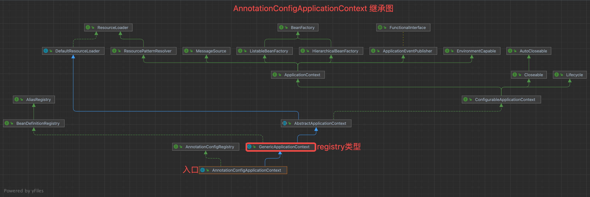
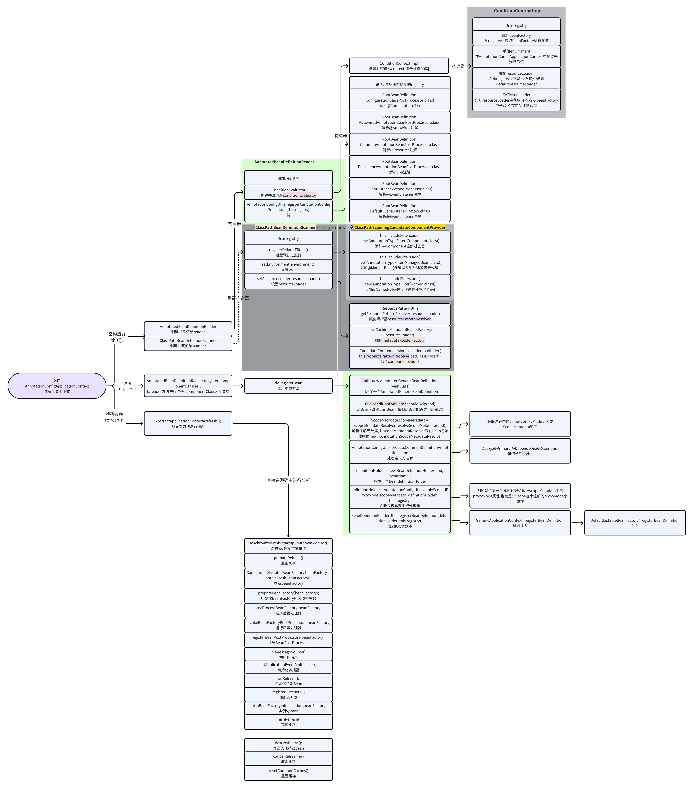

1 2("cn.spring._08springAdvinceAnno") 3({Man.class}) 4public class IocConfig { 5 6} 7 8-> 启动容器的代码:9AnnotationConfigApplicationContext context = new 10 AnnotationConfigApplicationContext(AnnotationConfig.class); x1// Context2public AnnotationConfigApplicationContext(Class<?>... componentClasses) {3 // 重载空构造器4 this();5 // 注册6 register(componentClasses);7 // 刷新8 refresh();9}10
11// 父类空构造器 创建一个DefaultListableBeanFactory12public GenericApplicationContext() {13 this.beanFactory = new DefaultListableBeanFactory();14} x
1/**2 * this()3 *4 * Create a new AnnotationConfigApplicationContext that needs to be populated5 * through {@link #register} calls and then manually {@linkplain #refresh refreshed}.6 */7public AnnotationConfigApplicationContext() {8 // 创建注解Reader9 this.reader = new AnnotatedBeanDefinitionReader(this);10 // 创建扫描器11 this.scanner = new ClassPathBeanDefinitionScanner(this);12}13
new AnnotatedBeanDefinitionReader(this);
1771// 调用同类构造器2public AnnotatedBeanDefinitionReader(BeanDefinitionRegistry registry) {3 this(registry, getOrCreateEnvironment(registry));4}5 6/**7 * 创建环境方法8 *9 * Get the Environment from the given registry if possible, otherwise return a new10 * StandardEnvironment.11 */12private static Environment getOrCreateEnvironment(BeanDefinitionRegistry registry) {13 Assert.notNull(registry, "BeanDefinitionRegistry must not be null");14 15 // 默认不是环境缓存所以直接走标准环境16 if (registry instanceof EnvironmentCapable) {17 return ((EnvironmentCapable) registry).getEnvironment();18 }19 return new StandardEnvironment();20}21
22/**23 * Create a new {@code AnnotatedBeanDefinitionReader} for the given registry,24 * using the given {@link Environment}.25 * @param registry the {@code BeanFactory} to load bean definitions into,26 * in the form of a {@code BeanDefinitionRegistry}27 * @param environment the {@code Environment} to use when evaluating bean definition28 * profiles.29 * @since 3.130*/31public AnnotatedBeanDefinitionReader(BeanDefinitionRegistry registry, Environment environment) {32 // 参数校验33 Assert.notNull(registry, "BeanDefinitionRegistry must not be null");34 Assert.notNull(environment, "Environment must not be null");35
36 // DefaultListableBeanFactory37 this.registry = registry;38 39 // 条件计算器40 this.conditionEvaluator = new ConditionEvaluator(registry, environment, null);41 42 // 注册配置类processor43 AnnotationConfigUtils.registerAnnotationConfigProcessors(this.registry);44}45
46
47/**48 * 条件计算器-new ConditionEvaluator(registry, environment, null);49 *50 * ConditionEvaluator类的构造器51 *52 * Create a new {@link ConditionEvaluator} instance.53 */54public ConditionEvaluator( BeanDefinitionRegistry registry,55 Environment environment, ResourceLoader resourceLoader) {56 // 创建了一个条件上下文57 this.context = new ConditionContextImpl(registry, environment, resourceLoader);58}59
60// 内部类 ConditionContextImpl, 61public ConditionContextImpl( BeanDefinitionRegistry registry,62 Environment environment, ResourceLoader resourceLoader) {63 64 this.registry = registry;65 // 初始化bean工厂66 this.beanFactory = deduceBeanFactory(registry);67 // 初始化环境68 this.environment = (environment != null ? environment : deduceEnvironment(registry));69 // 初始化 resourceLoader70 this.resourceLoader = (resourceLoader != null ? resourceLoader : deduceResourceLoader(registry));71 // 初始化classLoader72 this.classLoader = deduceClassLoader(resourceLoader, this.beanFactory);73}74
75
76/**77 * 注册配置类processor-AnnotationConfigUtils.registerAnnotationConfigProcessors(this.registry);78 *79 * Register all relevant annotation post processors in the given registry.80 * @param registry the registry to operate on81 */82public static void registerAnnotationConfigProcessors(BeanDefinitionRegistry registry) {83 registerAnnotationConfigProcessors(registry, null);84}85
86/**87 * 注册处理器88 *89 * Register all relevant annotation post processors in the given registry.90 * @param registry the registry to operate on91 * @param source the configuration source element (already extracted)92 * that this registration was triggered from. May be {@code null}.93 * @return a Set of BeanDefinitionHolders, containing all bean definitions94 * that have actually been registered by this call95 */96public static Set<BeanDefinitionHolder> registerAnnotationConfigProcessors(97 BeanDefinitionRegistry registry, Object source) {98
99 // 初始化BeanFactory registry默认就是DefaultListableBeanFactory的子类所以这里边直接返回100 DefaultListableBeanFactory beanFactory = unwrapDefaultListableBeanFactory(registry);101 if (beanFactory != null) {102 103 //设置默认的AnnotationAware排序规则 AnnotationAwareOrderComparator 饿汉式加载104 // dependencyComparator 这个属性105 if (!(beanFactory.getDependencyComparator() instanceof AnnotationAwareOrderComparator)) {106 beanFactory.setDependencyComparator(AnnotationAwareOrderComparator.INSTANCE);107 }108 109 // 设置默认的AnnotationAutowireCandidateResolver 110 // 作用, providing support for qualifier annotations as well as for lazy resolution]111 // autowireCandidateResolver这个属性112 if (!(beanFactory.getAutowireCandidateResolver() instanceof ContextAnnotationAutowireCandidateResolver)) {113 beanFactory.setAutowireCandidateResolver(new ContextAnnotationAutowireCandidateResolver());114 }115 }116
117 Set<BeanDefinitionHolder> beanDefs = new LinkedHashSet<>(8);118
119 // 注册一个配置类处理BeanDefinition <ConfigurationClassPostProcessor>120 if (!registry.containsBeanDefinition(CONFIGURATION_ANNOTATION_PROCESSOR_BEAN_NAME)) {121 RootBeanDefinition def = new RootBeanDefinition(ConfigurationClassPostProcessor.class);122 def.setSource(source);123 // 注册到registry this.beanDefinitionMap中124 beanDefs.add(registerPostProcessor(registry, def, CONFIGURATION_ANNOTATION_PROCESSOR_BEAN_NAME));125 }126
127 // 注册一个@Autowired解析器的BeanDefinition <AutowiredAnnotationBeanPostProcessor>128 if (!registry.containsBeanDefinition(AUTOWIRED_ANNOTATION_PROCESSOR_BEAN_NAME)) {129 RootBeanDefinition def = new RootBeanDefinition(AutowiredAnnotationBeanPostProcessor.class);130 def.setSource(source);131 // 注册到registry this.beanDefinitionMap中132 beanDefs.add(registerPostProcessor(registry, def, AUTOWIRED_ANNOTATION_PROCESSOR_BEAN_NAME));133 }134
135 // 检查是否支持JSR-250规范, 支持的话注册<CommonAnnotationBeanPostProcessor> 针对@Resource注解136 // Check for JSR-250 support, and if present add the CommonAnnotationBeanPostProcessor.137 if (jsr250Present && !registry.containsBeanDefinition(COMMON_ANNOTATION_PROCESSOR_BEAN_NAME)) {138 RootBeanDefinition def = new RootBeanDefinition(CommonAnnotationBeanPostProcessor.class);139 def.setSource(source);140 beanDefs.add(registerPostProcessor(registry, def, COMMON_ANNOTATION_PROCESSOR_BEAN_NAME));141 }142
143 // 检查是否支持JPA规则, 若支持注册解析jpa规范的注解 <PersistenceAnnotationBeanPostProcessor>144 // @Entity说明这个class是实体类、@Table是一个do、@Column是一个列名主要兼容Hibernate时代的145 // Check for JPA support, and if present add the PersistenceAnnotationBeanPostProcessor.146 if (jpaPresent && !registry.containsBeanDefinition(PERSISTENCE_ANNOTATION_PROCESSOR_BEAN_NAME)) {147 RootBeanDefinition def = new RootBeanDefinition();148 try {149 def.setBeanClass(ClassUtils.forName(PERSISTENCE_ANNOTATION_PROCESSOR_CLASS_NAME,150 AnnotationConfigUtils.class.getClassLoader()));151 }152 catch (ClassNotFoundException ex) {153 throw new IllegalStateException(154 "Cannot load optional framework class: " + PERSISTENCE_ANNOTATION_PROCESSOR_CLASS_NAME, ex);155 }156 def.setSource(source);157 beanDefs.add(registerPostProcessor(registry, def, PERSISTENCE_ANNOTATION_PROCESSOR_BEAN_NAME));158 }159
160 // 注册解析@EventListene注解<EventListenerMethodProcessor>161 if (!registry.containsBeanDefinition(EVENT_LISTENER_PROCESSOR_BEAN_NAME)) {162 RootBeanDefinition def = new RootBeanDefinition(EventListenerMethodProcessor.class);163 def.setSource(source);164 beanDefs.add(registerPostProcessor(registry, def, EVENT_LISTENER_PROCESSOR_BEAN_NAME));165 }166
167 // 注册事件监听器处理工厂配合上一步执行@EventListener168 if (!registry.containsBeanDefinition(EVENT_LISTENER_FACTORY_BEAN_NAME)) {169 RootBeanDefinition def = new RootBeanDefinition(DefaultEventListenerFactory.class);170 def.setSource(source);171 beanDefs.add(registerPostProcessor(registry, def, EVENT_LISTENER_FACTORY_BEAN_NAME));172 }173
174 return beanDefs;175}176
177// 总结: AnnotatedBeanDefinitionReader总体来说就是初始化Ioc容器和各种的BeanDefinition的处理器并注册到IOC的BeanDefinitionMap中容器中.事件编码驱动使用Demo
641/** 2 * 新增mongodb数据事件 Entity3 */ 4public class DataEventDemo extends ApplicationEvent {5 public AddDataEvent(Object source) { 6 super(source); 7 } 8 public AddDataEvent(Object source, Class clz, Object data) { 9 super(source); 10 this.clz = clz; 11 this.data = data; 12 }13 public AddDataEvent(Object source, Class clz, Object data, String modelName, String userAgent) { 14 super(source); 15 this.clz = clz; 16 this.data = data; 17 this.modelName = modelName; 18 this.userAgent = userAgent; 19 } 20 // 要更新的表对象21 private Class clz; 22 // 操作的数据23 private Object data; 24 // 模块名称25 private String modelName; 26 // 浏览器标识27 private String userAgent; 28} 29
30/**31 * 事件监听器32 */33 34public class AddDataEventListener { 35 private static Logger log = LoggerFactory.getLogger(AddDataEventListener.class); 36 /** 37 * 处理新增数据的事件 38 **/ 39 40 public void handleAddEvent(AddDataEvent event) { 41 log.info("发布的data为:{} ", JSON.toJSONString(event)); 42 } 43} 44
45/**46 * 使用47 */48 49("/test") 50public class TestController { 51 52 53 private ApplicationContext applicationContext; 54 55 56 ("/testListener") 57 public String testListener(){ 58 applicationContext.publishEvent(new AddDataEvent(this,TestController.class,"test")); 59 return "success"; 60 } 61} 62
63// 原理: 在AnnotationConfigUtils#registerAnnotationConfigProcessors注册了EventListenerMethodProcessor对象, 把要执行的方法封装为ApplicationListenerMethodAdapter -> 添加到listener中 AbstractApplicationEventMulticaster#addApplicationListener 64// 该方法在ApplicationListenerMethodAdapter利用反射执行.new ClassPathBeanDefinitionScanner(this);
911/**2 * ClassPathBeanDefinitionScanner 调用重构方法 useDefaultFilters->true;environment->getOrDefault; 3 *4 * Create a new {@code ClassPathBeanDefinitionScanner} for the given bean factory and5 * using the given {@link Environment} when evaluating bean definition profile metadata.6 * @param registry the {@code BeanFactory} to load bean definitions into, in the form7 * of a {@code BeanDefinitionRegistry}8 * @param useDefaultFilters whether to include the default filters for the9 * {@link org.springframework.stereotype.Component @Component},10 * {@link org.springframework.stereotype.Repository @Repository},11 * {@link org.springframework.stereotype.Service @Service}, and12 * {@link org.springframework.stereotype.Controller @Controller} stereotype annotations13 * @param environment the Spring {@link Environment} to use when evaluating bean14 * definition profile metadata15 * @param resourceLoader the {@link ResourceLoader} to use16 * @since 4.3.617 */18public ClassPathBeanDefinitionScanner(BeanDefinitionRegistry registry, boolean useDefaultFilters,19 Environment environment, ResourceLoader resourceLoader) {20
21 Assert.notNull(registry, "BeanDefinitionRegistry must not be null");22 23 this.registry = registry;24
25 // 注册包扫描默认的规则26 if (useDefaultFilters) {27 registerDefaultFilters();28 }29 30 // 设置环境31 setEnvironment(environment);32 33 // 设置resourceLoader34 setResourceLoader(resourceLoader);35}36
37/**38 * registerDefaultFilters(); 调用父类方法 设置默认过滤器39 */ 40protected void registerDefaultFilters() {41 // @Compent @Service @Repository @Controller @Aspectj 注解过滤器42 this.includeFilters.add(new AnnotationTypeFilter(Component.class));43 ClassLoader cl = ClassPathScanningCandidateComponentProvider.class.getClassLoader();44 try {45 // 反射添加 @Resource注解过滤器46 this.includeFilters.add(new AnnotationTypeFilter(47 ((Class<? extends Annotation>) ClassUtils.forName("javax.annotation.ManagedBean", cl)), false));48 logger.trace("JSR-250 'javax.annotation.ManagedBean' found and supported for component scanning");49 }50 catch (ClassNotFoundException ex) {51 // JSR-250 1.1 API (as included in Java EE 6) not available - simply skip.52 }53 54 try {55 // 反射添加jsr330注解56 this.includeFilters.add(new AnnotationTypeFilter(57 ((Class<? extends Annotation>) ClassUtils.forName("javax.inject.Named", cl)), false));58 logger.trace("JSR-330 'javax.inject.Named' annotation found and supported for component scanning");59 }60 catch (ClassNotFoundException ex) {61 // JSR-330 API not available - simply skip.62 }63}64
65/**66 * setEnvironment(environment); 调用父类方法设置环境67 */68public void setEnvironment(Environment environment) {69 Assert.notNull(environment, "Environment must not be null");70 this.environment = environment;71 this.conditionEvaluator = null;72}73
74/**75 * setResourceLoader(resourceLoader); 调用父类方法设置资源加载器76 */77public void setResourceLoader( ResourceLoader resourceLoader) {78 // 判断resourceLoader是否属于resourcePatternResolver79 // 是的话强转; 不是的话创建PathMatchingResourcePatternResolver, 主要作用是解析本地的pattern(类似与正则匹配url)80 this.resourcePatternResolver = ResourcePatternUtils.getResourcePatternResolver(resourceLoader);81 82 // 创建一个CachingMetadataReaderFactory, 往DefaultResourceLoader中缓存resourceCaches缓存了一份MetadataReader83 //metadataReader对一个类的各种元数据都封装成一个MetadataReader(包括类上的注解)84 this.metadataReaderFactory = new CachingMetadataReaderFactory(resourceLoader);85 86 // 初始化了一个@Componet的index值处理器87 this.componentsIndex = 88 CandidateComponentsIndexLoader.loadIndex(this.resourcePatternResolver.getClassLoader());89}90
91// 总结: ClassPathBeanDefinitionScanner主要初始化了@Component的过滤器, 设置了一些环境, 加载了resourcePatternResolver;metadataReaderFactory(类元数据工厂);componentsIndex.2891/**2 * componentClasses 配置类3 */4public void register(Class<?>... componentClasses) {5 Assert.notEmpty(componentClasses, "At least one component class must be specified");6 7 // 注解 在2.3中reader已经初始化为 AnnotatedBeanDefinitionReader8 this.reader.register(componentClasses);9}10
11
12/**13 * AnnotatedBeanDefinitionReader#register方法 14 */ 15public void register(Class<?>... componentClasses) {16 for (Class<?> componentClass : componentClasses) {17 registerBean(componentClass);18 }19}20
21
22/**23 * 注册配置类 name:null;qualifiers:null;supplier:null;customizers:null.24 */ 25private <T> void doRegisterBean(Class<T> beanClass,26 String name,27 Class<? extends Annotation>[] qualifiers,28 Supplier<T> supplier,29 BeanDefinitionCustomizer[] customizers) {30 31 // 创建了一个AnnotatedGenericBeanDefinition 将贴了注解的类通过接口暴漏32 AnnotatedGenericBeanDefinition abd = new AnnotatedGenericBeanDefinition(beanClass);33 34 // this.conditionEvaluator属性还是在 new AnnotatedBeanDefinitionReader时初始化的35 // 主要用来解析metaData中是否包含@Conditional注解 36 if (this.conditionEvaluator.shouldSkip(abd.getMetadata())) {37 return;38 }39
40 // 添加回调实例 这里是null41 abd.setInstanceSupplier(supplier);42 43 // 通过scopeMetadataResolver解析配置类属性—>是否是单例, 是否使用了代理; 默认单例, 不是代理.44 // scopeMetadataResolver属性是恶汉加载 new AnnotationScopeMetadataResolver().45 ScopeMetadata scopeMetadata = this.scopeMetadataResolver.resolveScopeMetadata(abd);46 47 // 获取到作用域设置到配置类的AnnotatedGenericBeanDefinition中48 abd.setScope(scopeMetadata.getScopeName());49 50 // 生成配置类beanName 51 String beanName = (name != null ? name : this.beanNameGenerator.generateBeanName(abd, this.registry));52
53 // 针对@Lazy注解;@Primary注解;@DependsOn注解;@Role注解将这些注解的属性值保存在AnnotatedBeanDefinition属性中.54 AnnotationConfigUtils.processCommonDefinitionAnnotations(abd);55 56 // qualifiers限定处理, 针对@Primary和@Lazy进行处理, 在初始化配置的时候默认为null.57 if (qualifiers != null) {58 for (Class<? extends Annotation> qualifier : qualifiers) {59 if (Primary.class == qualifier) {60 abd.setPrimary(true);61 }62 else if (Lazy.class == qualifier) {63 abd.setLazyInit(true);64 }65 else {66 abd.addQualifier(new AutowireCandidateQualifier(qualifier));67 }68 }69 }70 71 // 处理自定义的BeanDefinition 这里是null72 if (customizers != null) {73 for (BeanDefinitionCustomizer customizer : customizers) {74 customizer.customize(abd);75 }76 }77
78 // 创建一个BeanDefinitionHolder79 // BeanDefinitionHolder里边只有BeanDefinition和beanName, 还有别名;在这里别名没有使用到.80 BeanDefinitionHolder definitionHolder = new BeanDefinitionHolder(abd, beanName);81 // 通过使用的代理模式创建动态代理对象这里没有使用代理82 definitionHolder = AnnotationConfigUtils.applyScopedProxyMode(scopeMetadata, definitionHolder, this.registry);83
84 // 注册自己传入的主配置类bean定义到容器中85 BeanDefinitionReaderUtils.registerBeanDefinition(definitionHolder, this.registry);86}87
88
89/**90 * AnnotatedGenericBeanDefinition abd = new AnnotatedGenericBeanDefinition(beanClass);91 * AnnotatedGenericBeanDefinition构造器92 */93public AnnotatedGenericBeanDefinition(Class<?> beanClass) {94 // 将beanClass赋值给父类AbstractBeanDefinition的beanClass属性95 setBeanClass(beanClass);96 97 // 解析成一个元数据封装类StandardAnnotationMetadata98 this.metadata = AnnotationMetadata.introspect(beanClass);99}100// AnnotationMetadata.introspect(beanClass); 101public StandardAnnotationMetadata(Class<?> introspectedClass, boolean nestedAnnotationsAsMap) {102 super(introspectedClass);103 // 最终封装成了一个 TypeMappedAnnotations类104 this.mergedAnnotations = MergedAnnotations.from(introspectedClass,105 SearchStrategy.INHERITED_ANNOTATIONS, RepeatableContainers.none());106 // 将注解绑定成一个map true107 this.nestedAnnotationsAsMap = nestedAnnotationsAsMap;108}109
110/**111 * this.conditionEvaluator.shouldSkip(abd.getMetadata())112 * 条件判断113 */114public boolean shouldSkip(AnnotatedTypeMetadata metadata) {115 return shouldSkip(metadata, null);116}117/**118 * 条件判断119 */120public boolean shouldSkip( AnnotatedTypeMetadata metadata, ConfigurationPhase phase) {121 // 基础判断122 if (metadata == null || !metadata.isAnnotated(Conditional.class.getName())) {123 return false;124 }125 // phase为空设置参数递归调用126 if (phase == null) {127 if (metadata instanceof AnnotationMetadata &&128 // [判断是否是一个配置类 是的话方法递归调用129 ConfigurationClassUtils.isConfigurationCandidate((AnnotationMetadata) metadata)) {130 return shouldSkip(metadata, ConfigurationPhase.PARSE_CONFIGURATION);131 }132 // 不是配置类递归调用133 return shouldSkip(metadata, ConfigurationPhase.REGISTER_BEAN);134 }135
136 // 获取到包含@Condition注解的类137 List<Condition> conditions = new ArrayList<>();138 for (String[] conditionClasses : getConditionClasses(metadata)) {139 for (String conditionClass : conditionClasses) {140 Condition condition = getCondition(conditionClass, this.context.getClassLoader());141 conditions.add(condition);142 }143 }144
145 // 排序146 AnnotationAwareOrderComparator.sort(conditions);147
148 for (Condition condition : conditions) {149 ConfigurationPhase requiredPhase = null;150 // 是否必填151 if (condition instanceof ConfigurationCondition) {152 requiredPhase = ((ConfigurationCondition) condition).getConfigurationPhase();153 }154 // 如果必填或者匹配规则的话就跳过 否则不跳过155 if ((requiredPhase == null || requiredPhase == phase) && !condition.matches(this.context, metadata)) {156 return true;157 }158 }159
160 return false;161}162
163/**164 * ScopeMetadata scopeMetadata = this.scopeMetadataResolver.resolveScopeMetadata(abd);165 * 解析配置类属性—>是否是单例166 */167public ScopeMetadata resolveScopeMetadata(BeanDefinition definition) {168 // 创建了一个默认ScopeMetadata169 ScopeMetadata metadata = new ScopeMetadata();170
171 // 判断definition是否属于注解BeanDefinition172 if (definition instanceof AnnotatedBeanDefinition) {173 174 // 转换成注解BeanDefition175 AnnotatedBeanDefinition annDef = (AnnotatedBeanDefinition) definition;176 177 // 获取到 @Scope属性值178 AnnotationAttributes attributes = AnnotationConfigUtils.attributesFor(179 annDef.getMetadata(), this.scopeAnnotationType);180 181 if (attributes != null) {182 183 // 获取到@Scope的value184 metadata.setScopeName(attributes.getString("value"));185 // 获取到@Scope的proxyMode186 ScopedProxyMode proxyMode = attributes.getEnum("proxyMode");187 // 默认的话就返回默认188 if (proxyMode == ScopedProxyMode.DEFAULT) {189 proxyMode = this.defaultProxyMode;190 }191 // 否则设置指定的代理模式192 metadata.setScopedProxyMode(proxyMode);193 }194 }195 return metadata;196}197
198/**199 * this.beanNameGenerator.generateBeanName(abd, this.registry)200 * 生成beanName AnnotationBeanNameGenerator#generateBeanName201 */202public String generateBeanName(BeanDefinition definition, BeanDefinitionRegistry registry) {203 // 是beanName的话204 if (definition instanceof AnnotatedBeanDefinition) {205 String beanName = determineBeanNameFromAnnotation((AnnotatedBeanDefinition) definition);206 // 指定了beanName的话直接返回207 if (StringUtils.hasText(beanName)) {208 // Explicit bean name found.209 return beanName;210 }211 }212 // Fallback: generate a unique default bean name.213 return buildDefaultBeanName(definition, registry);214}215
216/**217 * 获取默认的beanName218 */219protected String buildDefaultBeanName(BeanDefinition definition) {220 // 获取className221 String beanClassName = definition.getBeanClassName();222 Assert.state(beanClassName != null, "No bean class name set");223
224 // 获取短类名225 String shortClassName = ClassUtils.getShortName(beanClassName);226 227 // 首字母变成小写228 return Introspector.decapitalize(shortClassName);229}230
231/**232 * AnnotationConfigUtils.processCommonDefinitionAnnotations(abd);233 * 针对@Lazy注解;@Primary注解;@DependsOn注解;@Role注解将这些注解的属性值保存在AnnotatedBeanDefinition属性中.234 */235static void processCommonDefinitionAnnotations(AnnotatedBeanDefinition abd, AnnotatedTypeMetadata metadata) {236 // 获取@Lazy注解值237 AnnotationAttributes lazy = attributesFor(metadata, Lazy.class);238 if (lazy != null) {239 abd.setLazyInit(lazy.getBoolean("value"));240 }241 else if (abd.getMetadata() != metadata) {242 lazy = attributesFor(abd.getMetadata(), Lazy.class);243 if (lazy != null) {244 abd.setLazyInit(lazy.getBoolean("value"));245 }246 }247
248 // 获取@Primary值249 if (metadata.isAnnotated(Primary.class.getName())) {250 abd.setPrimary(true);251 }252 AnnotationAttributes dependsOn = attributesFor(metadata, DependsOn.class);253 if (dependsOn != null) {254 abd.setDependsOn(dependsOn.getStringArray("value"));255 }256
257 // 获取@258 AnnotationAttributes role = attributesFor(metadata, Role.class);259 if (role != null) {260 abd.setRole(role.getNumber("value").intValue());261 }262 AnnotationAttributes description = attributesFor(metadata, Description.class);263 if (description != null) {264 abd.setDescription(description.getString("value"));265 }266}267
268/**269 * BeanDefinitionReaderUtils.registerBeanDefinition(definitionHolder, this.registry);270 * 注册到容器中271 */272public static void registerBeanDefinition(273 BeanDefinitionHolder definitionHolder, BeanDefinitionRegistry registry)274 throws BeanDefinitionStoreException {275
276 // 注册到容器中277 // Register bean definition under primary name.278 String beanName = definitionHolder.getBeanName();279 registry.registerBeanDefinition(beanName, definitionHolder.getBeanDefinition());280
281 // 有别名的话也注册到容器中282 // Register aliases for bean name, if any.283 String[] aliases = definitionHolder.getAliases();284 if (aliases != null) {285 for (String alias : aliases) {286 registry.registerAlias(beanName, alias);287 }288 }289}871
2/**3 * 调用父类方法 AbstractApplicationContext4 */5public void refresh() throws BeansException, IllegalStateException {6 7 // 饿汉 对象锁 8 synchronized (this.startupShutdownMonitor) {9 10 // 准备和刷新容器11 // Prepare this context for refreshing.12 prepareRefresh();13
14 // 创建并刷新BeanFactory, 使用模板模式, 在刷新时设置了序列化id防止被GC回收.15 // Tell the subclass to refresh the internal bean factory.16 ConfigurableListableBeanFactory beanFactory = obtainFreshBeanFactory();17
18 // 使用前准备, 初始化一些必要的属性19 // Prepare the bean factory for use in this context.20 prepareBeanFactory(beanFactory);21
22 try {23 24 // 处理自定义的BeanFactory, 没有的话执行AbstractRefreshableWebApplicationContext25 // Allows post-processing of the bean factory in context subclasses.26 postProcessBeanFactory(beanFactory);27
28 // 运行后置处理器29 // Invoke factory processors registered as beans in the context.30 invokeBeanFactoryPostProcessors(beanFactory);31
32 // 注册BeanPostProcessor33 // Register bean processors that intercept bean creation.34 registerBeanPostProcessors(beanFactory);35
36 // 初始化MessageContext 37 // Initialize message source for this context.38 initMessageSource();39
40 // 初始化多播器, 事件多播器主要是用作绑定事件;散发消息41 // Initialize event multicaster for this context.42 initApplicationEventMulticaster();43
44 // 给SpringBoot留的口子, SpringBoot启动时调用这个方法45 // Initialize other special beans in specific context subclasses.46 onRefresh();47
48 // 注册所有监听器49 // Check for listener beans and register them.50 registerListeners();51
52 // 实例化所有剩余的单例对象53 // Instantiate all remaining (non-lazy-init) singletons.54 finishBeanFactoryInitialization(beanFactory);55
56 // 完成刷新57 // Last step: publish corresponding event.58 finishRefresh();59 }60
61 catch (BeansException ex) {62 if (logger.isWarnEnabled()) {63 logger.warn("Exception encountered during context initialization - " +64 "cancelling refresh attempt: " + ex);65 }66
67 // 出现异常时销毁对象68 // Destroy already created singletons to avoid dangling resources.69 destroyBeans();70
71 // 取消刷新72 // Reset 'active' flag.73 cancelRefresh(ex);74
75 // Propagate exception to caller.76 throw ex;77 }78
79 finally {80 81 // 重置一些必要的缓存82 // Reset common introspection caches in Spring's core, since we83 // might not ever need metadata for singleton beans anymore...84 resetCommonCaches();85 }86 }87}prepareRefresh();
861/**2 * 3 * Prepare this context for refreshing, setting its startup date and4 * active flag as well as performing any initialization of property sources.5 */6protected void prepareRefresh() {7 8 // 初始化开关9 // Switch to active.10 this.startupDate = System.currentTimeMillis();11 this.closed.set(false);12 this.active.set(true);13 14 // 日志打印15 if (logger.isDebugEnabled()) {16 if (logger.isTraceEnabled()) {17 logger.trace("Refreshing " + this);18 }19 else {20 logger.debug("Refreshing " + getDisplayName());21 }22 }23
24 // 初始化属性25 // Initialize any placeholder property sources in the context environment.26 initPropertySources();27
28 // 校验环境中必要的参数29 // Validate that all properties marked as required are resolvable:30 // see ConfigurablePropertyResolver#setRequiredProperties31 getEnvironment().validateRequiredProperties();32
33 // 缓存早期Application监听器, 用于后期直接使用34 // Store pre-refresh ApplicationListeners...35 if (this.earlyApplicationListeners == null) {36 this.earlyApplicationListeners = new LinkedHashSet<>(this.applicationListeners);37 }38 else {39 40 // 重置早期的缓存41 // Reset local application listeners to pre-refresh state.42 this.applicationListeners.clear();43 this.applicationListeners.addAll(this.earlyApplicationListeners);44 }45
46 // 初始化早期事件47 // Allow for the collection of early ApplicationEvents,48 // to be published once the multicaster is available...49 this.earlyApplicationEvents = new LinkedHashSet<>();50}51
52/**53 * initPropertySources(); 调用子类GenericWebApplicationContext的方法初始化属性54 */55protected void initPropertySources() {56 ConfigurableEnvironment env = getEnvironment();57 if (env instanceof ConfigurableWebEnvironment) {58 // this.servletContext 设置在设置了servlet容器时添加的59 ((ConfigurableWebEnvironment) env).initPropertySources(this.servletContext, null);60 }61}62
63/**64 * ((ConfigurableWebEnvironment) env).initPropertySources(this.servletContext, null);65 * StandardServletEnvironment66 */67public void initPropertySources( ServletContext servletContext, ServletConfig servletConfig) {68 WebApplicationContextUtils.initServletPropertySources(getPropertySources(), servletContext, servletConfig);69}70
71/**72 * 初始化ServletProperty73 */74public static void initServletPropertySources(MutablePropertySources sources,75 ServletContext servletContext, ServletConfig servletConfig) {76
77 Assert.notNull(sources, "'propertySources' must not be null");78 String name = StandardServletEnvironment.SERVLET_CONTEXT_PROPERTY_SOURCE_NAME;79 if (servletContext != null && sources.get(name) instanceof StubPropertySource) {80 sources.replace(name, new ServletContextPropertySource(name, servletContext));81 }82 name = StandardServletEnvironment.SERVLET_CONFIG_PROPERTY_SOURCE_NAME;83 if (servletConfig != null && sources.get(name) instanceof StubPropertySource) {84 sources.replace(name, new ServletConfigPropertySource(name, servletConfig));85 }86}beanFactory = obtainFreshBeanFactory();
291/**2 * 刷新beanFactory 并获取返回3 * Tell the subclass to refresh the internal bean factory.4 * @return the fresh BeanFactory instance5 * @see #refreshBeanFactory()6 * @see #getBeanFactory()7 */8protected ConfigurableListableBeanFactory obtainFreshBeanFactory() {9 refreshBeanFactory();10 return getBeanFactory();11}12
13/**14 * refreshBeanFactory(); 设置了序列化id 防止被GC回收15 */16protected final void refreshBeanFactory() throws IllegalStateException {17 if (!this.refreshed.compareAndSet(false, true)) {18 throw new IllegalStateException(19 "GenericApplicationContext does not support multiple refresh attempts: just call 'refresh' once");20 }21 this.beanFactory.setSerializationId(getId());22}23
24/**25 * return getBeanFactory(); 直接返回这个beanFactory26 */27public final ConfigurableListableBeanFactory getBeanFactory() {28 return this.beanFactory;29}prepareBeanFactory(beanFactory);
1181/**2 * 使用前做准备, 初始化一些必要的属性3 * Configure the factory's standard context characteristics,4 * such as the context's ClassLoader and post-processors.5 * @param beanFactory the BeanFactory to configure6 */7protected void prepareBeanFactory(ConfigurableListableBeanFactory beanFactory) {8 // 设置classLoader9 // Tell the internal bean factory to use the context's class loader etc.10 beanFactory.setBeanClassLoader(getClassLoader());11 12 // 初始化一个StandardBeanExpressionResolver 存储在beanExpressionResolver属性中。13 // SpringBean表达式： @Value("${表达式}")14 beanFactory.setBeanExpressionResolver(new StandardBeanExpressionResolver(15 beanFactory.getBeanClassLoader()));16 17 // 初始化一个ResourceEditorRegistrar资源编辑器注册器, 添加到propertyEditorRegistrars属性中18 beanFactory.addPropertyEditorRegistrar(new ResourceEditorRegistrar(19 this, getEnvironment()));20
21 // 初始化BeanPostProcessor默认类型为ApplicationContextAwareProcessor, 里边主要存储了上下文和 EmbeddedValueResolver解析占位符和表达式的. 使用的是默认的BeanFactory来解析的.22 // Configure the bean factory with context callbacks.23 beanFactory.addBeanPostProcessor(new ApplicationContextAwareProcessor(this));24 25 // 忽略环境通知接口, 环境通知是被一些Bean实现之后要求在特定环境下进行通知26 beanFactory.ignoreDependencyInterface(EnvironmentAware.class);27 28 // 忽略${}时候通知接口, 被一些Object实现当解析嵌入值的时候会进行通知(比如获取properties).29 beanFactory.ignoreDependencyInterface(EmbeddedValueResolverAware.class);30 31 // 忽略ResourceLoaderAware接口, 主要调用getResource()方法来通过资源路径检索外部资源.32 beanFactory.ignoreDependencyInterface(ResourceLoaderAware.class);33 34 // 忽略ApplicationEventPublisherAware接口, 比如容器启动或者容器刷新等.35 beanFactory.ignoreDependencyInterface(ApplicationEventPublisherAware.class);36 37 // 忽略MessageSourceAware接口, 本地化信息.38 beanFactory.ignoreDependencyInterface(MessageSourceAware.class);39 40 // 忽略ApplicationContextAware接口, 此接口可以获取到当前spring容器 .41 beanFactory.ignoreDependencyInterface(ApplicationContextAware.class);42
43 // 在普通的工厂中, BeanFactory是不能被解析的, 因此需要将上边忽略的接口注入放入到缓存中44 // BeanFactory interface not registered as resolvable type in a plain factory.45 // MessageSource registered (and found for autowiring) as a bean.46 beanFactory.registerResolvableDependency(BeanFactory.class, beanFactory);47 beanFactory.registerResolvableDependency(ResourceLoader.class, this);48 beanFactory.registerResolvableDependency(ApplicationEventPublisher.class, this);49 beanFactory.registerResolvableDependency(ApplicationContext.class, this);50 // 以上四步主要将对应Class类型和DefaultListableBeanFactory和AnnotationConfigApplicationContext存储在DefaultListableBeanFactory的resolvableDependencies属性缓存起来因为在普通的Bean中使用这四种类型的时候是不能直接从IOC容器中获取到的因此这里通过"类型+对象"的方式缓存起来方便使用! 也是因为如此才忽略上边的这些接口的.51 52 // 向容器中注册早起后置处理器来发现-实现ApplicationListeners接口的监听器 53 // Register early post-processor for detecting inner beans as ApplicationListeners.54 beanFactory.addBeanPostProcessor(new ApplicationListenerDetector(this));55
56 // 判断BeanFactory中是否已经包含了LoadTimeWeaver实例化的bean或者BeanFactory(很明显不包含)57 // LoadTimeWeaver作用AspectJ语言定义切面, 在编译期或类加载期将切面织入到Java类中. 织入代码58 // Detect a LoadTimeWeaver and prepare for weaving, if found.59 if (beanFactory.containsBean(LOAD_TIME_WEAVER_BEAN_NAME)) {60 61 // 如果包括的话会往容器中注入LoadTimeWeaverAwareProcessor后置处理器62 beanFactory.addBeanPostProcessor(new LoadTimeWeaverAwareProcessor(beanFactory));63 64 // 往容器中注入TempClassLoader65 // Set a temporary ClassLoader for type matching.66 beanFactory.setTempClassLoader(new ContextTypeMatchClassLoader(67 beanFactory.getBeanClassLoader()));68 }69
70 // 注册默认环境的bean 默认是单例71 // Register default environment beans.72 if (!beanFactory.containsLocalBean(ENVIRONMENT_BEAN_NAME)) {73 beanFactory.registerSingleton(ENVIRONMENT_BEAN_NAME, getEnvironment());74 }75 76 // 不包含系统书信体 注册系统属性77 if (!beanFactory.containsLocalBean(SYSTEM_PROPERTIES_BEAN_NAME)) {78 beanFactory.registerSingleton(SYSTEM_PROPERTIES_BEAN_NAME, getEnvironment()79 .getSystemProperties());80 }81 82 // 包含系统环境 注册系统环境属性83 if (!beanFactory.containsLocalBean(SYSTEM_ENVIRONMENT_BEAN_NAME)) {84 beanFactory.registerSingleton(SYSTEM_ENVIRONMENT_BEAN_NAME, getEnvironment()85 .getSystemEnvironment());86 }87}88
89/**90 * beanFactory.addBeanPostProcessor(new ApplicationListenerDetector(this));91 */92public void addBeanPostProcessor(BeanPostProcessor beanPostProcessor) {93 94 Assert.notNull(beanPostProcessor, "BeanPostProcessor must not be null");95 96 // 移除老的97 // Remove from old position, if any98 this.beanPostProcessors.remove(beanPostProcessor);99 100 // 跟你不同的类型设置标记属性101 // Track whether it is instantiation/destruction aware102 if (beanPostProcessor instanceof InstantiationAwareBeanPostProcessor) {103 this.hasInstantiationAwareBeanPostProcessors = true;104 }105 if (beanPostProcessor instanceof DestructionAwareBeanPostProcessor) {106 this.hasDestructionAwareBeanPostProcessors = true;107 }108 109 // 添加新的110 // Add to end of list111 this.beanPostProcessors.add(beanPostProcessor);112 113 //ApplicationListenerDetector作用114 // 1.在Bean初始化完成之后: 如果Bean是单例的则并且实现了ApplicationListener接口, 加入到this.applicationListeners中.115 // 2.在Bean销毁之前: 如果Bean是一个ApplicationListener, 则会从ApplicationEventMulticaster中提前删除了.116}117
118// 总结这一步主要是初始化了classLoader;表达式解析器StandardBeanExpressionResolver; ApplicationListenerDetector;缓存了一个aware;往容器中注入一些BeanFactory.postProcessBeanFactory(beanFactory);
1221/**2 * 主要作用是在上下文的子类中对bean factory进行后处理, 3 * 如果单单使用ioc容器的话new AnnotationConfigApplicationContext的话是没有执行任何的代码的.4 * 如果是web应用的话会执行AbstractRefreshableWebApplicationContext#postProcessBeanFactory方法.5 *6 * Register ServletContextAwareProcessor.7 * @see ServletContextAwareProcessor8 */9protected void postProcessBeanFactory(ConfigurableListableBeanFactory beanFactory) {11 12 // 有webMVC的话会执行这一步13 if (this.servletContext != null) {14 // 创建ServletContextAwareProcessor15 beanFactory.addBeanPostProcessor(new ServletContextAwareProcessor(this.servletContext));16 17 // 忽略servlet配置信息18 beanFactory.ignoreDependencyInterface(ServletContextAware.class);19 }20 21 // 把web应用特殊作用域("request", "session", "globalSession", "application")注册到容器中22 WebApplicationContextUtils.registerWebApplicationScopes(beanFactory, this.servletContext);23 24 // 注册Web环境25 WebApplicationContextUtils.registerEnvironmentBeans(beanFactory, this.servletContext);26}27
28/**29 * WebApplicationContextUtils.registerWebApplicationScopes(beanFactory, this.servletContext);30 */31public static void registerWebApplicationScopes(ConfigurableListableBeanFactory beanFactory,32 ServletContext sc) {33
34 // 注册request请求作用域35 beanFactory.registerScope(WebApplicationContext.SCOPE_REQUEST, new RequestScope());36 37 // 注册session作用域38 beanFactory.registerScope(WebApplicationContext.SCOPE_SESSION, new SessionScope());39 40 // 注册application作用域41 if (sc != null) {42 ServletContextScope appScope = new ServletContextScope(sc);43 beanFactory.registerScope(WebApplicationContext.SCOPE_APPLICATION, appScope);44 // Register as ServletContext attribute, for ContextCleanupListener to detect it.45 sc.setAttribute(ServletContextScope.class.getName(), appScope);46 }47
48 // 注册 ServletRequest;ServletResponse;HttpSession;WebRequest处理器49 // 放到 resolvableDependencies这个属性中50 beanFactory.registerResolvableDependency(51 ServletRequest.class, new RequestObjectFactory());52 beanFactory.registerResolvableDependency(53 ServletResponse.class, new ResponseObjectFactory());54 beanFactory.registerResolvableDependency(55 HttpSession.class, new SessionObjectFactory());56 beanFactory.registerResolvableDependency(57 WebRequest.class, new WebRequestObjectFactory());58 59 // 注册jsf-构建Java Web 应用程序的标准框架60 // jsfPresent是通过反射判断javax.faces.context.FacesContext是否存在61 if (jsfPresent) {62 FacesDependencyRegistrar.registerFacesDependencies(beanFactory);63 }64}65
66/**67 * WebApplicationContextUtils.registerEnvironmentBeans(beanFactory, this.servletContext);68 * servletConfig-null69 */70public static void registerEnvironmentBeans(ConfigurableListableBeanFactory bf,71 ServletContext servletContext, ServletConfig servletConfig) {72
73 // servletContext放入单例池 registeredSingletons;singletonObjects74 if (servletContext != null 75 && !bf.containsBean(WebApplicationContext.SERVLET_CONTEXT_BEAN_NAME)) {76 bf.registerSingleton(WebApplicationContext.SERVLET_CONTEXT_BEAN_NAME, servletContext);77 }78
79 // servletConfig 放入单例池 registeredSingletons;singletonObjects80 if (servletConfig != null 81 && !bf.containsBean(ConfigurableWebApplicationContext.SERVLET_CONFIG_BEAN_NAME)) {82 bf.registerSingleton(ConfigurableWebApplicationContext.SERVLET_CONFIG_BEAN_NAME, servletConfig);83 }84
85 // 注册contextParameters86 if (!bf.containsBean(WebApplicationContext.CONTEXT_PARAMETERS_BEAN_NAME)) {87 Map<String, String> parameterMap = new HashMap<>();88 if (servletContext != null) {89 Enumeration<?> paramNameEnum = servletContext.getInitParameterNames();90 while (paramNameEnum.hasMoreElements()) {91 String paramName = (String) paramNameEnum.nextElement();92 parameterMap.put(paramName, servletContext.getInitParameter(paramName));93 }94 }95 if (servletConfig != null) {96 Enumeration<?> paramNameEnum = servletConfig.getInitParameterNames();97 while (paramNameEnum.hasMoreElements()) {98 String paramName = (String) paramNameEnum.nextElement();99 parameterMap.put(paramName, servletConfig.getInitParameter(paramName));100 }101 }102 bf.registerSingleton(WebApplicationContext.CONTEXT_PARAMETERS_BEAN_NAME,103 Collections.unmodifiableMap(parameterMap));104 }105
106 // 注册contextAttributes107 if (!bf.containsBean(WebApplicationContext.CONTEXT_ATTRIBUTES_BEAN_NAME)) {108 Map<String, Object> attributeMap = new HashMap<>();109 if (servletContext != null) {110 Enumeration<?> attrNameEnum = servletContext.getAttributeNames();111 while (attrNameEnum.hasMoreElements()) {112 String attrName = (String) attrNameEnum.nextElement();113 attributeMap.put(attrName, servletContext.getAttribute(attrName));114 }115 }116 bf.registerSingleton(WebApplicationContext.CONTEXT_ATTRIBUTES_BEAN_NAME,117 Collections.unmodifiableMap(attributeMap));118 }119
120}121
122//总结postProcessBeanFactory这个方法在web应用中主要注入了web应用独有的scope比如request;session等, 然后初始化了ServletContext上下文并存放在单例池中, servletContext实例化对象是ApplicationContextFacade.invokeBeanFactoryPostProcessors(beanFactory);
2061/**2 * 运行后置处理器- 是Spring容器核心方法3 *4 * 主要运行BeanFactory后置处理器, 之前注册的各种后置处理器都是在这一步运行的, 5 * 还有SpringBean(贴了Spring注解的bean)的实例化, DI依赖注入以及AOP动态代理都是在这一步完成的. 6 *7 * Instantiate and invoke all registered BeanFactoryPostProcessor beans,8 * respecting explicit order if given.9 * <p>Must be called before singleton instantiation.10 */11protected void invokeBeanFactoryPostProcessors(12 ConfigurableListableBeanFactory beanFactory) {13 // 执行BeanPostFactoryPostProcessor 14 // getBeanFactoryPostProcessors() 是直接从属性beanFactoryPostProcessors中获取到15 PostProcessorRegistrationDelegate.invokeBeanFactoryPostProcessors(beanFactory, getBeanFactoryPostProcessors());16
17 // 如果有loadTimeWeaver的话需要往容器中添加的很显然没有<在prepareBeanFactory时候添加的>18 // Detect a LoadTimeWeaver and prepare for weaving, if found in the meantime19 // (e.g. through an @Bean method registered by ConfigurationClassPostProcessor)20 if (beanFactory.getTempClassLoader() == null 21 && beanFactory.containsBean(LOAD_TIME_WEAVER_BEAN_NAME)) {22 // 添加Bean处理器23 beanFactory.addBeanPostProcessor(new LoadTimeWeaverAwareProcessor(beanFactory));24 beanFactory.setTempClassLoader(new ContextTypeMatchClassLoader(25 beanFactory.getBeanClassLoader()));26 }27}28
29/**30 * PostProcessorRegistrationDelegate.invokeBeanFactoryPostProcessors(beanFactory, 31 * getBeanFactoryPostProcessors());32 * 运行后置处理器33 */34public static void invokeBeanFactoryPostProcessors(35 ConfigurableListableBeanFactory beanFactory, 36 List<BeanFactoryPostProcessor> beanFactoryPostProcessors) {37
38 // 需要处理的bean39 // Invoke BeanDefinitionRegistryPostProcessors first, if any.40 Set<String> processedBeans = new HashSet<>();41
42 // beanFactory 是DefaultListableBeanFactory 实现了 BeanDefinitionRegistry 所以可以执行43 if (beanFactory instanceof BeanDefinitionRegistry) {44 BeanDefinitionRegistry registry = (BeanDefinitionRegistry) beanFactory;45 46 // 普通的PostProcessor47 List<BeanFactoryPostProcessor> regularPostProcessors = new ArrayList<>();48 49 // BeanDefinitionRegistryPostProcessor类型50 List<BeanDefinitionRegistryPostProcessor> registryProcessors = new ArrayList<>();51
52 // 循环判断53 for (BeanFactoryPostProcessor postProcessor : beanFactoryPostProcessors) {54 55 // 判断是否是BeanDefini tionRegistryPostProcessor 是的话强转 并处理 最后加入到上边集合56 if (postProcessor instanceof BeanDefinitionRegistryPostProcessor) {57 BeanDefinitionRegistryPostProcessor registryProcessor =58 (BeanDefinitionRegistryPostProcessor) postProcessor;59 60 // 处理 主要扫描所有的SpringBean并将会BeanDefinition注册到容器中61 registryProcessor.postProcessBeanDefinitionRegistry(registry);62 63 registryProcessors.add(registryProcessor);64 }65 66 else {67 68 // 添加到普通的容器中69 regularPostProcessors.add(postProcessor);70 }71 }72
73 // 当前注册的processor74 // Do not initialize FactoryBeans here: We need to leave all regular beans75 // uninitialized to let the bean factory post-processors apply to them!76 // Separate between BeanDefinitionRegistryPostProcessors that implement77 // PriorityOrdered, Ordered, and the rest.78 List<BeanDefinitionRegistryPostProcessor> currentRegistryProcessors = new ArrayList<>();79
80 // 获取所有实现PriorityOrdered接口的方法81 // First, invoke the BeanDefinitionRegistryPostProcessors implement PriorityOrdered.82 String[] postProcessorNames =83 beanFactory.getBeanNamesForType(BeanDefinitionRegistryPostProcessor.class, true, 84 false);85 // 循环处理86 for (String ppName : postProcessorNames) {87 // 实现了PriorityOrdered 就添加到集合中88 if (beanFactory.isTypeMatch(ppName, PriorityOrdered.class)) {89 currentRegistryProcessors.add(beanFactory.getBean(ppName, 90 BeanDefinitionRegistryPostProcessor.class));91 processedBeans.add(ppName);92 }93 }94 95 // 给注册容器进行排序96 sortPostProcessors(currentRegistryProcessors, beanFactory);97 98 // 添加到集合中99 registryProcessors.addAll(currentRegistryProcessors);100 101 // 进行注册 postProcessBeanDefinitionRegistry一样 重载方法102 invokeBeanDefinitionRegistryPostProcessors(currentRegistryProcessors, registry);103 104 // 注册完成之后清除105 currentRegistryProcessors.clear();106
107 // 第二步 从=容器中找到所有的B eanDefinitionRegistryPostProcessor 进行注册108 // Next, invoke the BeanDefinitionRegistryPostProcessors that implement Ordered.109 postProcessorNames = beanFactory.getBeanNamesForType(BeanDefinitionRegistryPostProcessor.class, true, false);110 for (String ppName : postProcessorNames) {111 if (!processedBeans.contains(ppName) && beanFactory.isTypeMatch(ppName, 112 Ordered.class)) {113 currentRegistryProcessors.add(beanFactory.getBean(ppName, 114 BeanDefinitionRegistryPostProcessor.class));115 processedBeans.add(ppName);116 }117 }118 sortPostProcessors(currentRegistryProcessors, beanFactory);119 registryProcessors.addAll(currentRegistryProcessors);120 invokeBeanDefinitionRegistryPostProcessors(currentRegistryProcessors, registry);121 currentRegistryProcessors.clear();122
123 // 最后 找到所有的 BeanDefinitionRegistryPostProcessor124 // Finally, invoke all other BeanDefinitionRegistryPostProcessors until no further ones appear.125 boolean reiterate = true;126 while (reiterate) {127 reiterate = false;128 postProcessorNames = beanFactory.getBeanNamesForType(129 BeanDefinitionRegistryPostProcessor.class, true, false);130 for (String ppName : postProcessorNames) {131 if (!processedBeans.contains(ppName)) {132 currentRegistryProcessors.add(beanFactory.getBean(ppName, 133 BeanDefinitionRegistryPostProcessor.class));134 processedBeans.add(ppName);135 reiterate = true;136 }137 }138 139 sortPostProcessors(currentRegistryProcessors, beanFactory);140 registryProcessors.addAll(currentRegistryProcessors);141 invokeBeanDefinitionRegistryPostProcessors(currentRegistryProcessors, registry);142 currentRegistryProcessors.clear();143 }144
145 // 运行所有的postProcessBeanFactory146 // Now, invoke the postProcessBeanFactory callback of all processors handled so far.147 invokeBeanFactoryPostProcessors(registryProcessors, beanFactory);148 invokeBeanFactoryPostProcessors(regularPostProcessors, beanFactory);149 }150
151 else {152 // Invoke factory processors registered with the context instance.153 invokeBeanFactoryPostProcessors(beanFactoryPostProcessors, beanFactory);154 }155
156 // Do not initialize FactoryBeans here: We need to leave all regular beans157 // uninitialized to let the bean factory post-processors apply to them!158 String[] postProcessorNames =159 beanFactory.getBeanNamesForType(BeanFactoryPostProcessor.class, true, false);160
161 // Separate between BeanFactoryPostProcessors that implement PriorityOrdered,162 // Ordered, and the rest.163 List<BeanFactoryPostProcessor> priorityOrderedPostProcessors = new ArrayList<>();164 List<String> orderedPostProcessorNames = new ArrayList<>();165 List<String> nonOrderedPostProcessorNames = new ArrayList<>();166 for (String ppName : postProcessorNames) {167 if (processedBeans.contains(ppName)) {168 // skip - already processed in first phase above169 }170 else if (beanFactory.isTypeMatch(ppName, PriorityOrdered.class)) {171 priorityOrderedPostProcessors.add(beanFactory.getBean(ppName, BeanFactoryPostProcessor.class));172 }173 else if (beanFactory.isTypeMatch(ppName, Ordered.class)) {174 orderedPostProcessorNames.add(ppName);175 }176 else {177 nonOrderedPostProcessorNames.add(ppName);178 }179 }180
181 // First, invoke the BeanFactoryPostProcessors that implement PriorityOrdered.182 sortPostProcessors(priorityOrderedPostProcessors, beanFactory);183 invokeBeanFactoryPostProcessors(priorityOrderedPostProcessors, beanFactory);184
185 // Next, invoke the BeanFactoryPostProcessors that implement Ordered.186 List<BeanFactoryPostProcessor> orderedPostProcessors = new ArrayList<>(orderedPostProcessorNames.size());187 for (String postProcessorName : orderedPostProcessorNames) {188 orderedPostProcessors.add(beanFactory.getBean(postProcessorName, BeanFactoryPostProcessor.class));189 }190 sortPostProcessors(orderedPostProcessors, beanFactory);191 invokeBeanFactoryPostProcessors(orderedPostProcessors, beanFactory);192
193 // Finally, invoke all other BeanFactoryPostProcessors.194 List<BeanFactoryPostProcessor> nonOrderedPostProcessors = new ArrayList<>(nonOrderedPostProcessorNames.size());195 for (String postProcessorName : nonOrderedPostProcessorNames) {196 nonOrderedPostProcessors.add(beanFactory.getBean(postProcessorName, BeanFactoryPostProcessor.class));197 }198 invokeBeanFactoryPostProcessors(nonOrderedPostProcessors, beanFactory);199
200 // Clear cached merged bean definitions since the post-processors might have201 // modified the original metadata, e.g. replacing placeholders in values...202 beanFactory.clearMetadataCache();203}204
205
206
8681/**2 * 处理bean注册处理器3 * registryProcessor.postProcessBeanDefinitionRegistry(registry);4 */5public void postProcessBeanDefinitionRegistry(BeanDefinitionRegistry registry) {6 7 // 判断是否正在处理8 int registryId = System.identityHashCode(registry);9 if (this.registriesPostProcessed.contains(registryId)) {10 throw new IllegalStateException(11 "postProcessBeanDefinitionRegistry already called on this post-processor against " 12 + registry);13 }14 if (this.factoriesPostProcessed.contains(registryId)) {15 throw new IllegalStateException(16 "postProcessBeanFactory already called on this post-processor against " + registry);17 }18 19 // 加入到处理的集合中 20 this.registriesPostProcessed.add(registryId);21
22 // 进行处理23 processConfigBeanDefinitions(registry);24}25
26/**27 * 处理BeanDefinition Build and validate a configuration model based on the registry of28 * processConfigBeanDefinitions(registry);29 */30public void processConfigBeanDefinitions(BeanDefinitionRegistry registry) {31 32 // 配置容器33 List<BeanDefinitionHolder> configCandidates = new ArrayList<>();34 35 // 获取所有的bean定义名称36 // 是在 this.reader = new AnnotatedBeanDefinitionReader(this);里边初始化 包括下边啊6个值37 // "org.springframework.context.annotation.internalConfigurationAnnotationProcessor"38 // "org.springframework.context.annotation.internalAutowiredAnnotationProcessor"39 // "org.springframework.context.annotation.internalCommonAnnotationProcessor"40 // "org.springframework.context.event.internalEventListenerProcessor"41 // "org.springframework.context.event.internalEventListenerFactory"42 // "annotationConfig"43 String[] candidateNames = registry.getBeanDefinitionNames();44 45 // 循环处理46 for (String beanName : candidateNames) {47 // 从容器中获取到BeanDefinition48 BeanDefinition beanDef = registry.getBeanDefinition(beanName);49 50 // 日志打印51 if (beanDef.getAttribute(ConfigurationClassUtils.CONFIGURATION_CLASS_ATTRIBUTE)!= null){52 if (logger.isDebugEnabled()) {53 logger.debug("Bean definition has already been processed as a configuration class: " + beanDef);54 }55 }56 57 // 校验配置类上是否有 @Component @ComponentScan @Import @ImportResource58 else if (ConfigurationClassUtils.checkConfigurationClassCandidate(beanDef, this.metadataReaderFactory)) {59 configCandidates.add(new BeanDefinitionHolder(beanDef, beanName));60 }61 }62
63 // 配置类为空的话直接返回64 // Return immediately if no @Configuration classes were found65 if (configCandidates.isEmpty()) {66 return;67 }68
69 // 给配置类按照order顺序排序70 // Sort by previously determined @Order value, if applicable71 configCandidates.sort((bd1, bd2) -> {72 int i1 = ConfigurationClassUtils.getOrder(bd1.getBeanDefinition());73 int i2 = ConfigurationClassUtils.getOrder(bd2.getBeanDefinition());74 return Integer.compare(i1, i2);75 });76
77 // Bean名称生成策略78 // Detect any custom bean name generation strategy supplied through the enclosing application context79 SingletonBeanRegistry sbr = null;80 81 // 判断registry是否是单例的beanRegistry 由继承图可以知道继承了的82 if (registry instanceof SingletonBeanRegistry) {83 84 sbr = (SingletonBeanRegistry) registry;85 86 // 是否需要读取普通beanName 默认为false取反了87 if (!this.localBeanNameGeneratorSet) {88 89 // 这个获取也非常简单, 先从单例池中获取, 没有在去早期单例对象中获取. 有刷新到单例池;没有返回null90 BeanNameGenerator generator = (BeanNameGenerator) sbr.getSingleton(91 AnnotationConfigUtils.CONFIGURATION_BEAN_NAME_GENERATOR);92 93 // 只有存在才会赋值 Bean名称生成器94 if (generator != null) {95 this.componentScanBeanNameGenerator = generator;96 this.importBeanNameGenerator = generator;97 }98 }99 }100
101 // 环境判断102 if (this.environment == null) {103 this.environment = new StandardEnvironment();104 }105
106 // 封装了一个配置类的解析器专门用来解析配置类的.107 // 里边包括各种已经初始化好的组件比如PropertySourceFactory直接new的;log相关的;还有一些容器108 // Parse each @Configuration class109 ConfigurationClassParser parser = new ConfigurationClassParser(110 this.metadataReaderFactory, //元数据读取工厂111 this.problemReporter, // 问题报告112 this.environment, // 环境113 this.resourceLoader, // 资源读取器114 this.componentScanBeanNameGenerator, // componentSacnebeanName生成器115 registry // 注册116 );117
118 // 将上边解析的配置类封装的BeanFactoryHolder进行解析119 Set<BeanDefinitionHolder> candidates = new LinkedHashSet<>(configCandidates);120 // 保存已经解析的配置类信息121 Set<ConfigurationClass> alreadyParsed = new HashSet<>(configCandidates.size());122 123 124 do {125 126 // **很重要执行解析配置类127 parser.parse(candidates);128 129 // 参数校验130 parser.validate();131
132 // 获取ConfigClass(把解析过的配置Bean定义信息获取出来)133 Set<ConfigurationClass> configClasses = 134 new LinkedHashSet<>(parser.getConfigurationClasses());135 136 // 移除已经存在的137 configClasses.removeAll(alreadyParsed);138
139 // Read the model and create bean definitions based on its content140 if (this.reader == null) {141 this.reader = new ConfigurationClassBeanDefinitionReader(142 registry, this.sourceExtractor, this.resourceLoader, this.environment,143 this.importBeanNameGenerator, parser.getImportRegistry());144 }145 146 // **读取beanDefinition, 147 this.reader.loadBeanDefinitions(configClasses);148 149 // 解析结果放到alreadyParse150 alreadyParsed.addAll(configClasses);151
152 // 清除解析过的 配置文件 153 candidates.clear();154 155 // 已经注册的bean定义个数大于最新开始系统+主配置类的 说明发生过解析.156 if (registry.getBeanDefinitionCount() > candidateNames.length) {157 158 // 获取系统+自己解析的+mainconfig的bean定义信息159 String[] newCandidateNames = registry.getBeanDefinitionNames();160 161 // 系统的+mainconfig的bean定义信息 162 Set<String> oldCandidateNames = new HashSet<>(Arrays.asList(candidateNames));163 164 // 已经解析过的自己的组件 165 Set<String> alreadyParsedClasses = new HashSet<>();166 167 // 放到 已经解析过的自己的组件168 for (ConfigurationClass configurationClass : alreadyParsed) {169 alreadyParsedClasses.add(configurationClass.getMetadata().getClassName());170 }171 172 // 循环解析BeanDefinition173 for (String candidateName : newCandidateNames) {174 175 // 老的(系统+mainconfig)不包含解析的176 if (!oldCandidateNames.contains(candidateName)) {177 BeanDefinition bd = registry.getBeanDefinition(candidateName);178 // 校验是否是配置类 并且没有解析过179 if (ConfigurationClassUtils.checkConfigurationClassCandidate(180 bd, this.metadataReaderFactory)181 &&!alreadyParsedClasses.contains(bd.getBeanClassName())) {182 183 // 放到candidates184 candidates.add(new BeanDefinitionHolder(bd, candidateName));185 }186 }187 }188 189 // 修改指针190 candidateNames = newCandidateNames;191 }192 }193 // 循环执行194 while (!candidates.isEmpty());195
196 // 单例池不包含importRegistry 进行注册197 // Register ImportRegistry as bean in order to support ImportAware @Configuration classes198 if (sbr != null && !sbr.containsSingleton(IMPORT_REGISTRY_BEAN_NAME)) {199 sbr.registerSingleton(IMPORT_REGISTRY_BEAN_NAME, parser.getImportRegistry());200 }201
202 // 是缓存的话 需要清除缓存203 if (this.metadataReaderFactory instanceof CachingMetadataReaderFactory) {204 // Clear cache in externally provided MetadataReaderFactory; this is a no-op205 // for a shared cache since it'll be cleared by the ApplicationContext.206 ((CachingMetadataReaderFactory) this.metadataReaderFactory).clearCache();207 }208}209
210/**211 * 执行解析212 * parser.parse(candidates);213 */214public void parse(Set<BeanDefinitionHolder> configCandidates) {215 // 循环解析216 for (BeanDefinitionHolder holder : configCandidates) {217 BeanDefinition bd = holder.getBeanDefinition();218 try {219 // 注解解析220 if (bd instanceof AnnotatedBeanDefinition) {221 parse(((AnnotatedBeanDefinition) bd).getMetadata(), holder.getBeanName());222 }223 224 // 抽象类解析225 else if (bd instanceof AbstractBeanDefinition && ((AbstractBeanDefinition) bd).hasBeanClass()) {226 parse(((AbstractBeanDefinition) bd).getBeanClass(), holder.getBeanName());227 }228 229 // 其他类解析230 else {231 parse(bd.getBeanClassName(), holder.getBeanName());232 }233 }234 catch (BeanDefinitionStoreException ex) {235 throw ex;236 }237 catch (Throwable ex) {238 throw new BeanDefinitionStoreException(239 "Failed to parse configuration class [" + bd.getBeanClassName() + "]", ex);240 }241 }242
243 //处理@Import导入的配置信息 244 this.deferredImportSelectorHandler.process();245}246
247/**248 * parse(bd.getBeanClassName(), holder.getBeanName()); 重掉方法249 */250protected void processConfigurationClass(ConfigurationClass configClass, 251 Predicate<String> filter) throws IOException {252 253 // 判断配置类上的@Conditional注解是是否满足要求 254 if (this.conditionEvaluator.shouldSkip(configClass.getMetadata(),255 ConfigurationPhase.PARSE_CONFIGURATION)) {256 return;257 }258
259 // 先从缓存configurationClasses中获取ConfigurationClass再启动的时候缓存是没有设置值的260 // 这个缓存主要是为了解决是否被循环impport261 ConfigurationClass existingClass = this.configurationClasses.get(configClass);262 263 if (existingClass != null) {264 // 已经被导入 就会合并在一起都放到importedBy 中265 if (configClass.isImported()) {266 if (existingClass.isImported()) {267 existingClass.mergeImportedBy(configClass);268 }269 // Otherwise ignore new imported config class; existing non-imported class overrides it.270 return;271 }272 273 else {274 275 // 如果没有被import的话从configurationClasses属性中移除并且从knownSuperclasses values中移除276 // Explicit bean definition found, probably replacing an import.277 // Let's remove the old one and go with the new one.278 this.configurationClasses.remove(configClass);279 this.knownSuperclasses.values().removeIf(configClass::equals);280 }281 }282
283 // // 对配置类进行简单的包装将Class类和注解进行包装source;metadata属性中方便获取 284 // Recursively process the configuration class and its superclass hierarchy.285 SourceClass sourceClass = asSourceClass(configClass, filter);286 do {287 //通过递归的方式 ==>288 sourceClass = doProcessConfigurationClass(configClass, sourceClass, filter);289 }290 while (sourceClass != null);291
292 // //将处理好的配置类放入到configurationClasses key是configClass;value也是configClass.293 this.configurationClasses.put(configClass, configClass);294}295
296/**297 * ==>298 * 真正开始处理配置类299 * sourceClass = doProcessConfigurationClass(configClass, sourceClass, filter);300 */301protected final SourceClass doProcessConfigurationClass(302 ConfigurationClass configClass, SourceClass sourceClass, Predicate<String> filter)303 throws IOException {304
305 // 先判断配置类上有没有@Compnent以及@Compnent的派生注解(@Service @Repository)306 if (configClass.getMetadata().isAnnotated(Component.class.getName())) {307 // 递归处理 ==>第1步308 // Recursively process any member (nested) classes first309 processMemberClasses(configClass, sourceClass, filter);310 }311
312 // 处理@PropertySource注解 313 // Process any @PropertySource annotations314 for (AnnotationAttributes propertySource : 315 AnnotationConfigUtils.attributesForRepeatable(sourceClass.getMetadata(), PropertySources.class,org.springframework.context.annotation.PropertySource.class)) {316 317 318 if (this.environment instanceof ConfigurableEnvironment) {319 // 处理@PropertySource ==>第2步320 processPropertySource(propertySource);321 }322 else {323 logger.info("Ignoring @PropertySource annotation on [" + sourceClass.getMetadata().getClassName() +324 "]. Reason: Environment must implement ConfigurableEnvironment");325 }326 }327
328 // 处理@ComponentScan注解329 // Process any @ComponentScan annotations330 Set<AnnotationAttributes> componentScans = AnnotationConfigUtils.attributesForRepeatable(331 sourceClass.getMetadata(), ComponentScans.class, ComponentScan.class);332 333 // 基础判断不是空并且不需要跳过334 if (!componentScans.isEmpty() &&335 !this.conditionEvaluator.shouldSkip(sourceClass.getMetadata(), ConfigurationPhase.REGISTER_BEAN)) {336 337 // 循环处理338 for (AnnotationAttributes componentScan : componentScans) {339 340 // 扫描解析 ==>第3步341 // The config class is annotated with @ComponentScan -> perform the scan immediately342 Set<BeanDefinitionHolder> scannedBeanDefinitions =343 this.componentScanParser.parse(componentScan, sourceClass.getMetadata().getClassName());344 345 // 扫描的结果 原始的Bean信息 346 // Check the set of scanned definitions for any further config classes and parse recursively if needed347 for (BeanDefinitionHolder holder : scannedBeanDefinitions) {348 349 BeanDefinition bdCand = holder.getBeanDefinition().getOriginatingBeanDefinition();350 if (bdCand == null) {351 bdCand = holder.getBeanDefinition();352 }353 354 // 检查Bean是否是配置类355 if (ConfigurationClassUtils.checkConfigurationClassCandidate(bdCand, this.metadataReaderFactory)) {356 357 // 是的话 调用parse递归处理 指定了beanName的parse方法358 parse(bdCand.getBeanClassName(), holder.getBeanName());359 }360 }361 }362 }363
364 // 处理@Import注解365 // Process any @Import annotations366 processImports(configClass, sourceClass, getImports(sourceClass), filter, true);367
368 // @ImportResource注解369 // Process any @ImportResource annotations370 AnnotationAttributes importResource =371 AnnotationConfigUtils.attributesFor(sourceClass.getMetadata(), ImportResource.class);372 if (importResource != null) {373 String[] resources = importResource.getStringArray("locations");374 Class<? extends BeanDefinitionReader> readerClass = importResource.getClass("reader");375 for (String resource : resources) {376 String resolvedResource = this.environment.resolveRequiredPlaceholders(resource);377 configClass.addImportedResource(resolvedResource, readerClass);378 }379 }380
381 // 处理@Bean方法382 // Process individual @Bean methods383 Set<MethodMetadata> beanMethods = retrieveBeanMethodMetadata(sourceClass);384 for (MethodMetadata methodMetadata : beanMethods) {385 configClass.addBeanMethod(new BeanMethod(methodMetadata, configClass));386 }387
388 // 处理接口默认方法389 // Process default methods on interfaces390 processInterfaces(configClass, sourceClass);391
392 // 处理 父类393 // Process superclass, if any394 if (sourceClass.getMetadata().hasSuperClass()) {395 String superclass = sourceClass.getMetadata().getSuperClassName();396 if (superclass != null && !superclass.startsWith("java") &&397 !this.knownSuperclasses.containsKey(superclass)) {398 this.knownSuperclasses.put(superclass, configClass);399 // Superclass found, return its annotation metadata and recurse400 return sourceClass.getSuperClass();401 }402 }403
404 // No superclass -> processing is complete405 return null;406}407
408/**409 * ==>第1步410 * processMemberClasses(configClass, sourceClass, filter);411 *412 * Register member (nested) classes that happen to be configuration classes themselves.413 */414// 1.//configClass就是配置类的class;sourceClass就是对配置类的简单包装415private void processMemberClasses(ConfigurationClass configClass, SourceClass sourceClass,416 Predicate<String> filter) throws IOException {417
418 // 获取到所有的配置类里边所有的内部类 ==>第1.1步419 Collection<SourceClass> memberClasses = sourceClass.getMemberClasses();420 421 // 判断422 if (!memberClasses.isEmpty()) {423 424 // 注解不一致的集合425 List<SourceClass> candidates = new ArrayList<>(memberClasses.size());426 for (SourceClass memberClass : memberClasses) {427 428 // 如果是配置类并且配置内部类的注解和外部配置类注解不一致429 if (ConfigurationClassUtils.isConfigurationCandidate(memberClass.getMetadata()) 430 &&!memberClass.getMetadata().getClassName().equals(configClass.getMetadata()431 .getClassName())) {432 candidates.add(memberClass);433 }434 }435 436 // 排序437 OrderComparator.sort(candidates);438 439 // 循环处理440 for (SourceClass candidate : candidates) {441 442 // 如果已经被导入就放入到问题栈中 相当于上下文中存放错误信息的容器 443 if (this.importStack.contains(configClass)) {444 this.problemReporter.error(new CircularImportProblem(configClass,445 this.importStack));446 }447 448 else {449 this.importStack.push(configClass);450 try {451 452 // 掉上边的方法递归处理 453 processConfigurationClass(candidate.asConfigClass(configClass), filter);454 }455 finally {456 this.importStack.pop();457 }458 }459 }460 }461}462/**463 * ==>第1.1步 获取内部类464 * sourceClass.getMemberClasses();465 */466public Collection<SourceClass> getMemberClasses() throws IOException {467 Object sourceToProcess = this.source;468 469 // 强转470 if (sourceToProcess instanceof Class) {471 Class<?> sourceClass = (Class<?>) sourceToProcess;472 473 try {474 475 // 获取所有内部类476 Class<?>[] declaredClasses = sourceClass.getDeclaredClasses();477 List<SourceClass> members = new ArrayList<>(declaredClasses.length);478 479 // 添加到成员中480 for (Class<?> declaredClass : declaredClasses) {481 members.add(asSourceClass(declaredClass, DEFAULT_EXCLUSION_FILTER));482 }483 return members;484 }485 catch (NoClassDefFoundError err) {486 // getDeclaredClasses() failed because of non-resolvable dependencies487 // -> fall back to ASM below488 sourceToProcess = metadataReaderFactory.getMetadataReader(sourceClass.getName());489 }490 }491
492 // 否则就是强转成MetadataReader 处理493 // ASM-based resolution - safe for non-resolvable classes as well494 MetadataReader sourceReader = (MetadataReader) sourceToProcess;495 String[] memberClassNames = sourceReader.getClassMetadata().getMemberClassNames();496 List<SourceClass> members = new ArrayList<>(memberClassNames.length);497 for (String memberClassName : memberClassNames) {498 try {499 members.add(asSourceClass(memberClassName, DEFAULT_EXCLUSION_FILTER));500 }501 catch (IOException ex) {502 // Let's skip it if it's not resolvable - we're just looking for candidates503 if (logger.isDebugEnabled()) {504 logger.debug("Failed to resolve member class [" + memberClassName +505 "] - not considering it as a configuration class candidate");506 }507 }508 }509 return members;510}511
512
513/**514 * ==>第2步 处理@PropertySource515 * processPropertySource(propertySource);516 * 这个处理最终是把@PropertySource导入的资源加入到了BeanFactory的propertySourceNames（名字）、 517 * propertySourceList（名字+资源）518 */519private void processPropertySource(AnnotationAttributes propertySource) throws IOException {520 // name属性521 String name = propertySource.getString("name");522 if (!StringUtils.hasLength(name)) {523 name = null;524 }525 526 // encoding属性527 String encoding = propertySource.getString("encoding");528 if (!StringUtils.hasLength(encoding)) {529 encoding = null;530 }531 532 // value属性533 String[] locations = propertySource.getStringArray("value");534 Assert.isTrue(locations.length > 0, "At least one @PropertySource(value) location is required");535 536 // ignoreResourceNotFound属性537 boolean ignoreResourceNotFound = propertySource.getBoolean("ignoreResourceNotFound");538
539 // factory属性540 Class<? extends PropertySourceFactory> factoryClass = propertySource.getClass("factory");541 542 // 实例化SourceFactory543 PropertySourceFactory factory = (factoryClass == PropertySourceFactory.class ?544 DEFAULT_PROPERTY_SOURCE_FACTORY : BeanUtils.instantiateClass(factoryClass));545
546 // valaue属性循环处理547 for (String location : locations) {548 try {549 550 // 从环境中解析这个属性值, 解析成一个相对路径551 String resolvedLocation = this.environment.resolveRequiredPlaceholders(location);552 553 // 通过resourceLoader来获取到这个资源554 Resource resource = this.resourceLoader.getResource(resolvedLocation);555 556 // 添加到属性source中 先判断propertySourceNames属性中是否包含了这个name，557 // 包含了进行替换，最终会添加到propertySourceNames属性中558 addPropertySource(factory.createPropertySource(name, new EncodedResource(resource, encoding)));559 }560 561 562 catch (IllegalArgumentException | FileNotFoundException | UnknownHostException | SocketException ex) {563 // Placeholders not resolvable or resource not found when trying to open it564 if (ignoreResourceNotFound) {565 if (logger.isInfoEnabled()) {566 logger.info("Properties location [" + location + "] not resolvable: " + ex.getMessage());567 }568 }569 else {570 throw ex;571 }572 }573 }574}575
576
577/**578 * ==>第3步 解析@ComponentScan注解579 * this.componentScanParser.parse(componentScan, sourceClass.getMetadata().getClassName());580 */581public Set<BeanDefinitionHolder> parse(AnnotationAttributes componentScan, 582 final String declaringClass) {583 // 封装一个ClassPath扫描器584 ClassPathBeanDefinitionScanner scanner = new ClassPathBeanDefinitionScanner(this.registry,585 componentScan.getBoolean("useDefaultFilters"), this.environment, this.resourceLoader);586
587 // 从nameGenerator下边存在的class找到generatorClass 588 Class<? extends BeanNameGenerator> generatorClass = 589 componentScan.getClass("nameGenerator");590 boolean useInheritedGenerator = (BeanNameGenerator.class == generatorClass);591 592 // 设置beanName生成器实例对象593 scanner.setBeanNameGenerator(useInheritedGenerator ? this.beanNameGenerator :594 BeanUtils.instantiateClass(generatorClass));595
596 // 获取scopedProxy属性, 并设置代理模式597 ScopedProxyMode scopedProxyMode = componentScan.getEnum("scopedProxy");598 if (scopedProxyMode != ScopedProxyMode.DEFAULT) {599 scanner.setScopedProxyMode(scopedProxyMode);600 }601 602 // 默认代理模式(单例)603 else {604 605 // 是默认的代理模式的话就直接实例化一个解析器 并设置到扫描器中606 Class<? extends ScopeMetadataResolver> resolverClass = 607 componentScan.getClass("scopeResolver");608 scanner.setScopeMetadataResolver(BeanUtils.instantiateClass(resolverClass));609 }610
611 // 将resourcePattern直接设置到扫描器中612 scanner.setResourcePattern(componentScan.getString("resourcePattern"));613
614 // 获取includeFilters属性 过滤规则 并添加到扫描器中615 for (AnnotationAttributes filter : componentScan.getAnnotationArray("includeFilters")) {616 for (TypeFilter typeFilter : typeFiltersFor(filter)) {617 scanner.addIncludeFilter(typeFilter);618 }619 }620 621 // excludeFilters 需要排除的622 for (AnnotationAttributes filter : componentScan.getAnnotationArray("excludeFilters")) {623 for (TypeFilter typeFilter : typeFiltersFor(filter)) {624 scanner.addExcludeFilter(typeFilter);625 }626 }627
628 // 是否需要懒加载629 boolean lazyInit = componentScan.getBoolean("lazyInit");630 if (lazyInit) {631 scanner.getBeanDefinitionDefaults().setLazyInit(true);632 }633 634 // 获取basePackages 属性635 Set<String> basePackages = new LinkedHashSet<>();636 String[] basePackagesArray = componentScan.getStringArray("basePackages");637 638 // 循环处理 去除CONFIG_LOCATION_DELIMITERS中的转移字符串639 for (String pkg : basePackagesArray) {640 String[] tokenized = 641 StringUtils.tokenizeToStringArray(this.environment.resolvePlaceholders(pkg),642 ConfigurableApplicationContext.CONFIG_LOCATION_DELIMITERS);643 Collections.addAll(basePackages, tokenized);644 }645 646 647 // basePackageClasses 设置的扫描类的包名648 for (Class<?> clazz : componentScan.getClassArray("basePackageClasses")) {649 basePackages.add(ClassUtils.getPackageName(clazz));650 }651 // 为空的话 设置默认的扫描包 当前的class的包名 (SpringBoot就是这么设置的)652 if (basePackages.isEmpty()) {653 basePackages.add(ClassUtils.getPackageName(declaringClass));654 }655 656 // 扫描器设置不需要扫描的类 657 scanner.addExcludeFilter(new AbstractTypeHierarchyTraversingFilter(false, false) {658 659 protected boolean matchClassName(String className) {660 return declaringClass.equals(className);661 }662 });663 664 // 执行扫描 ==>第3.1步665 return scanner.doScan(StringUtils.toStringArray(basePackages));666}667
668/**669 * ==>第3.1步 执行解析670 * ClassPathBeanDefinitionScanner 方法671 * scanner.doScan(StringUtils.toStringArray(basePackages));672 */673protected Set<BeanDefinitionHolder> doScan(String... basePackages) {674 Assert.notEmpty(basePackages, "At least one base package must be specified");675 676 Set<BeanDefinitionHolder> beanDefinitions = new LinkedHashSet<>();677 678 // 循环执行679 for (String basePackage : basePackages) {680 681 // ==>第3.1.1步 找到这个包下的所有的BeanDefination682 Set<BeanDefinition> candidates = findCandidateComponents(basePackage);683 684 // 循环解析685 for (BeanDefinition candidate : candidates) {686 687 // @Scope注解的属性没有走默认(是否是单例;是否使用代理模式)通过判断688 ScopeMetadata scopeMetadata = 689 this.scopeMetadataResolver.resolveScopeMetadata(candidate);690 candidate.setScope(scopeMetadata.getScopeName());691 692 // 生成beanName 如果指定的话就用指定的名称没有指定的话 类名首字母小写693 String beanName = this.beanNameGenerator.generateBeanName(candidate, this.registry);694 695 // 是否是ScannedGenericBeanDefinition696 if (candidate instanceof AbstractBeanDefinition) {697 698 // ==>第3.1.2步 运行后置处理器 给BeanDefinition设置一些值比如懒加载699 postProcessBeanDefinition((AbstractBeanDefinition) candidate, beanName);700 }701 702 // 判断是否是注解类型@Lazy;@Primary;@DependsOn;@Role;@Description这些注解的属性值703 // 设置到BeanDefinition中704 if (candidate instanceof AnnotatedBeanDefinition) {705 AnnotationConfigUtils.processCommonDefinitionAnnotations((AnnotatedBeanDefinition) candidate);706 }707 708 // ==>第3.1.3步 校验BeanFactory中是否包含这种BeanDefinition true没有包含 709 if (checkCandidate(beanName, candidate)) {710 BeanDefinitionHolder definitionHolder = new BeanDefinitionHolder(711 candidate, beanName);712 definitionHolder =713 AnnotationConfigUtils.applyScopedProxyMode(scopeMetadata, 714 definitionHolder, this.registry);715 716 // 添加到beanDefinitions717 beanDefinitions.add(definitionHolder);718 719 注册到BeanFactory中720 registerBeanDefinition(definitionHolder, this.registry);721 }722 }723 }724 725 // 返回726 return beanDefinitions;727}728
729/**730 * ==>第3.1.1步 查找所有的带有@Component注解的类731 * findCandidateComponents(basePackage);732 */733public Set<BeanDefinition> findCandidateComponents(String basePackage) {734 if (this.componentsIndex != null && indexSupportsIncludeFilters()) {735 return addCandidateComponentsFromIndex(this.componentsIndex, basePackage);736 }737 else {738 return scanCandidateComponents(basePackage);739 }740}741// 扫描包742private Set<BeanDefinition> scanCandidateComponents(String basePackage) {743 Set<BeanDefinition> candidates = new LinkedHashSet<>();744 try {745 // 设置全路径名746 String packageSearchPath = ResourcePatternResolver.CLASSPATH_ALL_URL_PREFIX +747 resolveBasePackage(basePackage) + '/' + this.resourcePattern;748
749 // 获取到所有的@Resource名 通过反射的方法查找所有的类750 Resource[] resources = getResourcePatternResolver().getResources(packageSearchPath);751 752 // 日志753 boolean traceEnabled = logger.isTraceEnabled();754 boolean debugEnabled = logger.isDebugEnabled();755 756 for (Resource resource : resources) {757 if (traceEnabled) {758 logger.trace("Scanning " + resource);759 }760 761 // 如果存在762 if (resource.isReadable()) {763 try {764 765 // 获取到元数据读取器 就是将贴的注解都封装起来766 MetadataReader metadataReader = 767 getMetadataReaderFactory().getMetadataReader(resource);768 769 // 判断是否存在@Component注解如果存在的话就添加到返回的队列中770 if (isCandidateComponent(metadataReader)) {771 ScannedGenericBeanDefinition sbd = 772 new ScannedGenericBeanDefinition(metadataReader);773 sbd.setSource(resource);774 775 // 日志776 if (isCandidateComponent(sbd)) {777 if (debugEnabled) {778 logger.debug("Identified candidate component class: " + resource);779 }780 candidates.add(sbd);781 }782 else {783 if (debugEnabled) {784 logger.debug("Ignored because not a concrete top-level class: " + resource);785 }786 }787 }788 else {789 if (traceEnabled) {790 logger.trace("Ignored because not matching any filter: " + resource);791 }792 }793 }794 795 796 catch (Throwable ex) {797 throw new BeanDefinitionStoreException(798 "Failed to read candidate component class: " + resource, ex);799 }800 }801 else {802 if (traceEnabled) {803 logger.trace("Ignored because not readable: " + resource);804 }805 }806 }807 }808 catch (IOException ex) {809 throw new BeanDefinitionStoreException("I/O failure during classpath scanning", ex);810 }811 812 // 返回813 return candidates;814}815
816/**817 * ==>第3.1.2步 运行后置处理器818 * postProcessBeanDefinition((AbstractBeanDefinition) candidate, beanName);819 */820protected void postProcessBeanDefinition(AbstractBeanDefinition beanDefinition,821 String beanName) {822 beanDefinition.applyDefaults(this.beanDefinitionDefaults);823 if (this.autowireCandidatePatterns != null) {824beanDefinition.setAutowireCandidate(PatternMatchUtils.simpleMatch(this.autowireCandidatePatterns, beanName));825 }826}827// 设置默认参数828public void applyDefaults(BeanDefinitionDefaults defaults) {829 Boolean lazyInit = defaults.getLazyInit();830 if (lazyInit != null) {831 setLazyInit(lazyInit);832 }833 setAutowireMode(defaults.getAutowireMode());834 setDependencyCheck(defaults.getDependencyCheck());835 setInitMethodName(defaults.getInitMethodName());836 setEnforceInitMethod(false);837 setDestroyMethodName(defaults.getDestroyMethodName());838 setEnforceDestroyMethod(false);839}840
841/**842 * ==>第3.1.3步 校验BeanFactory中是否包含这种BeanDefinition true没有包含 843 * checkCandidate(beanName, candidate)844 */845protected boolean checkCandidate(String beanName, BeanDefinition beanDefinition) 846 throws IllegalStateException {847 // 不包含返回true848 if (!this.registry.containsBeanDefinition(beanName)) {849 return true;850 }851 852 // 包含853 BeanDefinition existingDef = this.registry.getBeanDefinition(beanName);854 BeanDefinition originatingDef = existingDef.getOriginatingBeanDefinition();855 if (originatingDef != null) {856 existingDef = originatingDef;857 }858 859 // 是否一样一样的话返回false860 if (isCompatible(beanDefinition, existingDef)) {861 return false;862 }863 864 // 不一样的话证明重复注册 抛出异常865 throw new ConflictingBeanDefinitionException("Annotation-specified bean name '" + beanName +866 "' for bean class [" + beanDefinition.getBeanClassName() + "] conflicts with existing, " +867 "non-compatible bean definition of same name and class [" + existingDef.getBeanClassName() + "]");868}registerBeanPostProcessors(beanFactory);
1181/**2 * Instantiate and register all BeanPostProcessor beans,3 * respecting explicit order if given.4 * <p>Must be called before any instantiation of application beans.5 */6protected void registerBeanPostProcessors(ConfigurableListableBeanFactory beanFactory) {7 PostProcessorRegistrationDelegate.registerBeanPostProcessors(beanFactory, this);8}9public static void registerBeanPostProcessors(ConfigurableListableBeanFactory beanFactory, 10 AbstractApplicationContext applicationContext) {11 12 // 获取所有的BeanPostProcessor13 String[] postProcessorNames = beanFactory.getBeanNamesForType(BeanPostProcessor.class, true, false);14
15 // 需要处理的数量16 // Register BeanPostProcessorChecker that logs an info message when17 // a bean is created during BeanPostProcessor instantiation, i.e. when18 // a bean is not eligible for getting processed by all BeanPostProcessors.19 int beanProcessorTargetCount = beanFactory.getBeanPostProcessorCount() + 1 + postProcessorNames.length;20 21 // 将BeanPostProcessorChecker添加到容器中22 beanFactory.addBeanPostProcessor(new BeanPostProcessorChecker(beanFactory, beanProcessorTargetCount));23
24 // Separate between BeanPostProcessors that implement PriorityOrdered,25 // Ordered, and the rest.26 List<BeanPostProcessor> priorityOrderedPostProcessors = new ArrayList<>();27 28 // 内部的处理类29 List<BeanPostProcessor> internalPostProcessors = new ArrayList<>();30 List<String> orderedPostProcessorNames = new ArrayList<>();31 List<String> nonOrderedPostProcessorNames = new ArrayList<>();32 33 // 循环处理 后置处理器34 for (String ppName : postProcessorNames) {35 36 // 如果属于PriorityOrdered37 if (beanFactory.isTypeMatch(ppName, PriorityOrdered.class)) {38 39 BeanPostProcessor pp = beanFactory.getBean(ppName, BeanPostProcessor.class);40 priorityOrderedPostProcessors.add(pp);41 if (pp instanceof MergedBeanDefinitionPostProcessor) {42 // 添加到内部处集合中43 internalPostProcessors.add(pp);44 }45 }46 47 // 如果属于Ordered48 else if (beanFactory.isTypeMatch(ppName, Ordered.class)) {49 // 添加到order结合中50 orderedPostProcessorNames.add(ppName);51 }52 else {53 // 添加到没有匹配的集合中54 nonOrderedPostProcessorNames.add(ppName);55 }56 }57
58 // 首先给priorityOrdered排序 并注册59 // First, register the BeanPostProcessors that implement PriorityOrdered.60 sortPostProcessors(priorityOrderedPostProcessors, beanFactory);61 registerBeanPostProcessors(beanFactory, priorityOrderedPostProcessors);62
63 64 // Next, register the BeanPostProcessors that implement Ordered.65 List<BeanPostProcessor> orderedPostProcessors = new ArrayList<>(orderedPostProcessorNames.size());66 // 循环处理ordered类的PostProcessor67 for (String ppName : orderedPostProcessorNames) {68 BeanPostProcessor pp = beanFactory.getBean(ppName, BeanPostProcessor.class);69 orderedPostProcessors.add(pp);70 // 属于MergedBeanDefinitionPostProcessor 添加到内部的PostProcessor中71 if (pp instanceof MergedBeanDefinitionPostProcessor) {72 internalPostProcessors.add(pp);73 }74 }75 76 // 排序并注册PostProcessor77 sortPostProcessors(orderedPostProcessors, beanFactory);78 registerBeanPostProcessors(beanFactory, orderedPostProcessors);79
80 // 注册普通类型的81 // Now, register all regular BeanPostProcessors.82 List<BeanPostProcessor> nonOrderedPostProcessors = new ArrayList<>(nonOrderedPostProcessorNames.size());83 for (String ppName : nonOrderedPostProcessorNames) {84 BeanPostProcessor pp = beanFactory.getBean(ppName, BeanPostProcessor.class);85 nonOrderedPostProcessors.add(pp);86 87 // 属于MergedBeanDefinitionPostProcessor 添加到内部PostProcessor中88 if (pp instanceof MergedBeanDefinitionPostProcessor) {89 internalPostProcessors.add(pp);90 }91 }92 // 注册没有顺序的postProcessor93 registerBeanPostProcessors(beanFactory, nonOrderedPostProcessors);94
95 // 最后排序内部处理类并注册96 // Finally, re-register all internal BeanPostProcessors.97 sortPostProcessors(internalPostProcessors, beanFactory);98 registerBeanPostProcessors(beanFactory, internalPostProcessors);99
100 // 将上下文设置到BeanFactory容器中101 // Re-register post-processor for detecting inner beans as ApplicationListeners,102 // moving it to the end of the processor chain (for picking up proxies etc).103 beanFactory.addBeanPostProcessor(new ApplicationListenerDetector(applicationContext));104}105
106/**107 * 注册BeanPostProcessor108 * registerBeanPostProcessors 设置到容器中109 */110private static void registerBeanPostProcessors(111 ConfigurableListableBeanFactory beanFactory, List<BeanPostProcessor> postProcessors) {112
113 for (BeanPostProcessor postProcessor : postProcessors) {114 beanFactory.addBeanPostProcessor(postProcessor);115 }116}117
118// 总体来说就是往容器里边注册各种的BeanPostProcessor后置处理器initMessageSource();
421
2/**3 * 初始化 MessageSource4 * Initialize the MessageSource.5 * Use parent's if none defined in this context.6 */7protected void initMessageSource() {8 ConfigurableListableBeanFactory beanFactory = getBeanFactory();9 10 // 容器中已经包含MESSAGE_SOURCE_BEAN_NAME11 if (beanFactory.containsLocalBean(MESSAGE_SOURCE_BEAN_NAME)) {12
13 // 给当前属性赋值 14 this.messageSource = beanFactory.getBean(MESSAGE_SOURCE_BEAN_NAME, MessageSource.class);15 // Make MessageSource aware of parent MessageSource.16 if (this.parent != null && this.messageSource instanceof HierarchicalMessageSource) {17 HierarchicalMessageSource hms = (HierarchicalMessageSource) this.messageSource;18 if (hms.getParentMessageSource() == null) {19 20 // 设置父类的MessageSource21 // Only set parent context as parent MessageSource if no parent MessageSource22 // registered already.23 hms.setParentMessageSource(getInternalParentMessageSource());24 }25 }26 if (logger.isTraceEnabled()) {27 logger.trace("Using MessageSource [" + this.messageSource + "]");28 }29 }30 31 else {32 // 没有包含的话 就注册到单例池中33 // Use empty MessageSource to be able to accept getMessage calls.34 DelegatingMessageSource dms = new DelegatingMessageSource();35 dms.setParentMessageSource(getInternalParentMessageSource());36 this.messageSource = dms;37 beanFactory.registerSingleton(MESSAGE_SOURCE_BEAN_NAME, this.messageSource);38 if (logger.isTraceEnabled()) {39 logger.trace("No '" + MESSAGE_SOURCE_BEAN_NAME + "' bean, using [" + this.messageSource + "]");40 }41 }42}initApplicationEventMulticaster();
271/**2 * Initialize the ApplicationEventMulticaster.3 * Uses SimpleApplicationEventMulticaster if none defined in the context.4 * @see org.springframework.context.event.SimpleApplicationEventMulticaster5 */6protected void initApplicationEventMulticaster() {7 ConfigurableListableBeanFactory beanFactory = getBeanFactory();8 9 // 判断是否包含APPLICATION_EVENT_MULTICASTER_BEAN_NAME10 if (beanFactory.containsLocalBean(APPLICATION_EVENT_MULTICASTER_BEAN_NAME)) {11 this.applicationEventMulticaster =12 beanFactory.getBean(APPLICATION_EVENT_MULTICASTER_BEAN_NAME, ApplicationEventMulticaster.class);13 if (logger.isTraceEnabled()) {14 logger.trace("Using ApplicationEventMulticaster [" + this.applicationEventMulticaster + "]");15 }16 }17 18 // 不包含 注册到单例池中19 else {20 this.applicationEventMulticaster = new SimpleApplicationEventMulticaster(beanFactory);21 beanFactory.registerSingleton(APPLICATION_EVENT_MULTICASTER_BEAN_NAME, this.applicationEventMulticaster);22 if (logger.isTraceEnabled()) {23 logger.trace("No '" + APPLICATION_EVENT_MULTICASTER_BEAN_NAME + "' bean, using " +24 "[" + this.applicationEventMulticaster.getClass().getSimpleName() + "]");25 }26 }27}onRefresh();
71/**2 * Initialize the theme capability.3 */4protected void onRefresh() {6 this.themeSource = UiApplicationContextUtils.initThemeSource(this);7}registerListeners();
311/**2 * Add beans that implement ApplicationListener as listeners.3 * Doesn't affect other listeners, which can be added without being beans.4 */5protected void registerListeners() {6 7 // 注册所有的listener 注册到多播器中8 // Register statically specified listeners first.9 for (ApplicationListener<?> listener : getApplicationListeners()) {10 getApplicationEventMulticaster().addApplicationListener(listener);11 }12
13 // 将ApplicationListener 注册到多播器中14 // Do not initialize FactoryBeans here: We need to leave all regular beans15 // uninitialized to let post-processors apply to them!16 String[] listenerBeanNames = getBeanNamesForType(ApplicationListener.class, true, false);17 for (String listenerBeanName : listenerBeanNames) {18 getApplicationEventMulticaster().addApplicationListenerBean(listenerBeanName);19 }20
21 // 发布早期application events22 // Publish early application events now that we finally have a multicaster...23 Set<ApplicationEvent> earlyEventsToProcess = this.earlyApplicationEvents;24 this.earlyApplicationEvents = null;25 if (!CollectionUtils.isEmpty(earlyEventsToProcess)) {26 for (ApplicationEvent earlyEvent : earlyEventsToProcess) {27 // 使用多播器进行播报28 getApplicationEventMulticaster().multicastEvent(earlyEvent);29 }30 }31}finishBeanFactoryInitialization(beanFactory);
13821/**2 * 创建Bean 完成依赖注入3 * Finish the initialization of this context's bean factory,4 * initializing all remaining singleton beans.5 */6protected void finishBeanFactoryInitialization(ConfigurableListableBeanFactory beanFactory) {7 8 // 先判断容器中是否包含conversionBean, 并且属于ConversionService这个类型[很明显没有初始化]9 // Initialize conversion service for this context.10 if (beanFactory.containsBean(CONVERSION_SERVICE_BEAN_NAME) &&11 beanFactory.isTypeMatch(CONVERSION_SERVICE_BEAN_NAME, ConversionService.class)) {12 beanFactory.setConversionService(13 beanFactory.getBean(CONVERSION_SERVICE_BEAN_NAME, ConversionService.class));14 }15
16 // 判断是否存在属性值解析器, 不存在的话从环境中获取一个17 // Register a default embedded value resolver if no BeanFactoryPostProcessor18 // (such as a PropertySourcesPlaceholderConfigurer bean) registered any before:19 // at this point, primarily for resolution in annotation attribute values.20 if (!beanFactory.hasEmbeddedValueResolver()) {21 beanFactory.addEmbeddedValueResolver(strVal -> 22 getEnvironment().resolvePlaceholders(strVal));23 }24
25 // 实例化LoadTimeWeaverAware26 // 先从BeanFactory中获取到LoadTimeWeaverAware, 在使用Aop的时候会在初始化的时候注入这个Bean27 // Initialize LoadTimeWeaverAware beans early to allow for registering 28 // their transformers early.29 String[] weaverAwareNames = beanFactory.getBeanNamesForType(LoadTimeWeaverAware.class, 30 false, false);31 32 // 循环初六33 for (String weaverAwareName : weaverAwareNames) {34 // 执行的就是BeanFactory的getBean方法 获取的是代理对象35 getBean(weaverAwareName);36 }37
38 // 禁用临时ClassLoader39 // Stop using the temporary ClassLoader for type matching.40 beanFactory.setTempClassLoader(null);41
42 // configurationFrozen设置为true将frozenBeanDefinitionNames就设置为已经发现的beanName43 // Allow for caching all bean definition metadata, not expecting further changes.44 beanFactory.freezeConfiguration();45
46 // ==> 第1步初始化Bean47 // Instantiate all remaining (non-lazy-init) singletons.48 beanFactory.preInstantiateSingletons();49}50
51/**52 * ==> 第1步初始化Bean 调用DefaultListableBeanFactory53 * beanFactory.preInstantiateSingletons();54 */55public void preInstantiateSingletons() throws BeansException {57 if (logger.isTraceEnabled()) {58 logger.trace("Pre-instantiating singletons in " + this);59 }60
61 // 取出所有的BeanDefinitionName放到一个新的容器62 // Iterate over a copy to allow for init methods which in turn register new bean definitions. While this may not be part of the regular factory bootstrap, it does otherwise work fine.63 List<String> beanNames = new ArrayList<>(this.beanDefinitionNames);64
65 // 循环处理66 // Trigger initialization of all non-lazy singleton beans...67 for (String beanName : beanNames) {68 69 // ==>第1.1步 获取ZRootBeanDefinition70 // 先从mergedBeanDefinions属性中获取, 不存在从BeanDefinitionMap中递归从父类mergedBeanDefinitions获取.71 RootBeanDefinition bd = getMergedLocalBeanDefinition(beanName);72 73 // 不是抽象类、是单例、不是懒加载74 if (!bd.isAbstract() && bd.isSingleton() && !bd.isLazyInit()) {75 76 // 如果是FactoryBean (拿着beanName单例池中实例化判断是否四线FactoryBean接口, 在判断父类是否实现了FactoryBean接口, 都没有实现根据Class类型进行判断)77 if (isFactoryBean(beanName)) {78 79 // 是FactoryBean的话直接在beanName之前加&获取到bean80 Object bean = getBean(FACTORY_BEAN_PREFIX + beanName);81 82 // 用于强转83 if (bean instanceof FactoryBean) {84 FactoryBean<?> factory = (FactoryBean<?>) bean;85 86 // 是否立即加载默认为false87 boolean isEagerInit;88 89 // 基础参数判断90 if (System.getSecurityManager() != null && factory instanceof SmartFactoryBean) {91 92 // 判断是否可以立即加载93 isEagerInit = AccessController.doPrivileged(94 (PrivilegedAction<Boolean>) ((SmartFactoryBean<?>) factory)::isEagerInit,95 getAccessControlContext());96 }else {97 isEagerInit = (factory instanceof SmartFactoryBean &&98 ((SmartFactoryBean<?>) factory).isEagerInit());99 }100 101 // 立即加载的话 直接getBean传beanName进行实例化注册到单例池中102 if (isEagerInit) {103 104 // ==>第1.2步 获取bean105 getBean(beanName);106 }107 }108 109 }110 111 // 不是FactoryBean 直接实例化112 else {113 getBean(beanName);114 }115 }116 }117
118 // 这里已经都实例化了 主要是去执行实现了SmartInitializingSingleton接口的方法119 // Trigger post-initialization callback for all applicable beans...120 for (String beanName : beanNames) {121 122 // 从单例池中获取到实例123 Object singletonInstance = getSingleton(beanName);124 125 // 如果实现了SmartInitializingSingleton接口, 就会执行afterSingletonsInstantiated方法初始化属性126 if (singletonInstance instanceof SmartInitializingSingleton) {127 128 SmartInitializingSingleton smartSingleton = (SmartInitializingSingleton) 129 singletonInstance;130 131 // 系统开启安全管理器的话 需要通过代理去执行132 if (System.getSecurityManager() != null) {133 AccessController.doPrivileged((PrivilegedAction<Object>) () -> {134 smartSingleton.afterSingletonsInstantiated();135 return null;136 }, getAccessControlContext());137 }138 else {139 140 // 直接执行141 smartSingleton.afterSingletonsInstantiated();142 }143 }144 }145}146
147/**148 * ==>第1.1步 获取ZRootBeanDefinition149 * containingBd为null150 *151 * RootBeanDefinition bd = getMergedLocalBeanDefinition(beanName);152 */153protected RootBeanDefinition getMergedBeanDefinition(154 String beanName, BeanDefinition bd, BeanDefinition containingBd)155 throws BeanDefinitionStoreException {156
157 // 同步锁158 synchronized (this.mergedBeanDefinitions) {159 160 // 初始化161 RootBeanDefinition mbd = null;162 RootBeanDefinition previous = null;163
164 // 很显然containingBd 这个是null会执行 给mbd赋值165 // Check with full lock now in order to enforce the same merged instance.166 if (containingBd == null) {167 mbd = this.mergedBeanDefinitions.get(beanName);168 }169
170 // 没有获取mbs171 if (mbd == null || mbd.stale) {172 previous = mbd;173 174 // 如果父类也是null的话175 if (bd.getParentName() == null) {176 177 // 如果这个类本身就是rootBeanDefiniton178 // Use copy of given root bean definition.179 if (bd instanceof RootBeanDefinition) {180 // 克隆之后赋值给mbd181 mbd = ((RootBeanDefinition) bd).cloneBeanDefinition();182 } else {183 184 // 不是就new一个185 mbd = new RootBeanDefinition(bd);186 }187 188 // 父类存在189 }else {190 // Child bean definition: needs to be merged with parent.191 BeanDefinition pbd;192 try {193 194 // 获取到父类的名字195 String parentBeanName = transformedBeanName(bd.getParentName());196 197 // 如果beanName不等于父类名字198 if (!beanName.equals(parentBeanName)) {199 200 // 递归调用获取从父类获取MergedBeanDefinition并赋值给pbd201 pbd = getMergedBeanDefinition(parentBeanName);202 }203 204 // beanName等于父类名字205 else {206 207 // 获取的父类的BeanFactory208 BeanFactory parent = getParentBeanFactory();209 210 // 父类是配置类的话211 if (parent instanceof ConfigurableBeanFactory) {212 // 强转成配置类 在进行递归调用213 pbd = ((ConfigurableBeanFactory) parent)214 .getMergedBeanDefinition(parentBeanName);215 }216 217 // 父类不是配置类 抛异常218 else {219 throw new NoSuchBeanDefinitionException(parentBeanName,220 "Parent name '" + parentBeanName + "' is equal to bean name '" + beanName +221 "': cannot be resolved without a ConfigurableBeanFactory parent");222 }223 }224 }225 catch (NoSuchBeanDefinitionException ex) {226 throw new BeanDefinitionStoreException(bd.getResourceDescription(), beanName,227 "Could not resolve parent bean definition '" + bd.getParentName() + "'", ex);228 }229 230 // 深拷贝 mbd231 // Deep copy with overridden values.232 mbd = new RootBeanDefinition(pbd);233 mbd.overrideFrom(bd);234 }235
236 // 设置mbd为单例237 // Set default singleton scope, if not configured before.238 if (!StringUtils.hasLength(mbd.getScope())) {239 mbd.setScope(SCOPE_SINGLETON);240 }241
242 // A bean contained in a non-singleton bean cannot be a singleton itself.243 // Let's correct this on the fly here, since this might be the result of244 // parent-child merging for the outer bean, in which case the original inner bean245 // definition will not have inherited the merged outer bean's singleton status.246 if (containingBd != null && !containingBd.isSingleton() && mbd.isSingleton()) {247 mbd.setScope(containingBd.getScope());248
249
250 // 放到容器中251 // Cache the merged bean definition for the time being252 // (it might still get re-merged later on in order to pick up metadata changes)253 if (containingBd == null && isCacheBeanMetadata()) {254 this.mergedBeanDefinitions.put(beanName, mbd);255 }256 }257 258 // 放到缓存中259 if (previous != null) {260 copyRelevantMergedBeanDefinitionCaches(previous, mbd);261 }262 263 // 返回264 return mbd;265 }266}267 268/**269 * ==>第1.2步 getBean 重点方法 对bean进行实例化并进行依赖注入270 *271 * getBean(beanName);272 */273public Object getBean(String name) throws BeansException {274 return doGetBean(name, null, null, false);275}276// 实例化bean277protected <T> T doGetBean(String name, Class<T> requiredType, 278 Object[] args, boolean typeCheckOnly)279 throws BeansException {280
281 // 先获取真正的beanName, 如果传入的是别名就找aliasMap中获取, 如果是&开头的话去掉&符号.282 String beanName = transformedBeanName(name);283 284 Object bean;285
286 // 先从单例池中获取, 如果获取不到就去早期缓存池中获取 {防止循环依赖}287 // Eagerly check singleton cache for manually registered singletons.288 Object sharedInstance = getSingleton(beanName);289 290 // 获取到的话291 if (sharedInstance != null && args == null) {292 if (logger.isTraceEnabled()) {293 if (isSingletonCurrentlyInCreation(beanName)) {294 logger.trace("Returning eagerly cached instance of singleton bean '" + beanName +295 "' that is not fully initialized yet - a consequence of a circular reference");296 }297 else {298 logger.trace("Returning cached instance of singleton bean '" + beanName + "'");299 }300 }301 302 // ==>第1.2.1步 实例对象303 bean = getObjectForBeanInstance(sharedInstance, name, beanName, null);304 }305
306 // 单例池中没有307 else {308 309 // 当前Bean是否是原型模式, 如果是的话抛出一个异常防止循环依赖.310 // Fail if we're already creating this bean instance:311 // We're assumably within a circular reference.312 if (isPrototypeCurrentlyInCreation(beanName)) {313 throw new BeanCurrentlyInCreationException(beanName);314 }315
316 // Check if bean definition exists in this factory.317 BeanFactory parentBeanFactory = getParentBeanFactory();318 319 // 父类存在并且容器中不包含当前Bean的话320 if (parentBeanFactory != null && !containsBeanDefinition(beanName)) {321 322 // 校验是否是&开头323 // Not found -> check parent.324 String nameToLookup = originalBeanName(name);325 326 // 如果父类是抽象类327 if (parentBeanFactory instanceof AbstractBeanFactory) {328 329 // 父类进行递归调用 获取父类的属性330 return ((AbstractBeanFactory) parentBeanFactory).doGetBean(331 nameToLookup, requiredType, args, typeCheckOnly);332 }333 334 // 如果参数不是null就委派给父类从新递归一些getBean335 else if (args != null) {336 337 // 委派父类递归调用338 // Delegation to parent with explicit args.339 return (T) parentBeanFactory.getBean(nameToLookup, args);340 }341 342 // 无参的话 委派一个标准的getBean方法343 else if (requiredType != null) {344 // No args -> delegate to standard getBean method.345 return parentBeanFactory.getBean(nameToLookup, requiredType);346 }347 348 // 其他的还是通过递归的方法调用getBean349 else {350 return (T) parentBeanFactory.getBean(nameToLookup);351 }352 }353
354 // 是否只校验类型默认不只是校验类型会执行这一步355 if (!typeCheckOnly) {356 357 // 从这一步从alreadyCreated属性中看是否已经创建, 没有创建的话就将mergedBeanDefinitions这个属性中的BeanDefinition给清楚掉, 然后添加到markBeanAsCreated中358 markBeanAsCreated(beanName);359 }360
361 // 开始实例化 上边都是递归条件判断362 try {363 364 // 获取RootBeanDefinition365 RootBeanDefinition mbd = getMergedLocalBeanDefinition(beanName);366 367 // 校验是否是抽象类368 checkMergedBeanDefinition(mbd, beanName, args);369
370 // 获取到依赖的bean @dependsOn注解注入的371 // Guarantee initialization of beans that the current bean depends on.372 String[] dependsOn = mbd.getDependsOn();373 if (dependsOn != null) {374 for (String dep : dependsOn) {375 376 // 判断当前的beanName是否循环依赖, 这个依赖是维护在一个dependentBeanMap属性中去value是集合；377 if (isDependent(beanName, dep)) {378 throw new BeanCreationException(mbd.getResourceDescription(), beanName,379 "Circular depends-on relationship between '" + beanName + "' and '" + dep + "'");380 }381 382 // 维护到dependentBeanMap中, 从新创建一个keyValue保存到dependentBeanMap中383 registerDependentBean(dep, beanName);384 try {385 386 // 递归调用 去创建一个依赖的Bean 387 getBean(dep);388 }389 catch (NoSuchBeanDefinitionException ex) {390 throw new BeanCreationException(mbd.getResourceDescription(), beanName,391 "'" + beanName + "' depends on missing bean '" + dep + "'", ex);392 }393 }394 }395
396 // 是单例397 // Create bean instance.398 if (mbd.isSingleton()) {399 400 // 获取单例模式401 sharedInstance = getSingleton(beanName, () -> {402 try {403 404 // ==>第1.2.2步 创建Bean405 return createBean(beanName, mbd, args);406 }407 catch (BeansException ex) {408 // Explicitly remove instance from singleton cache: It might have been put there409 // eagerly by the creation process, to allow for circular reference resolution.410 // Also remove any beans that received a temporary reference to the bean.411 destroySingleton(beanName);412 throw ex;413 }414 });415 416 // 1.2.1一样实例化bean417 bean = getObjectForBeanInstance(sharedInstance, name, beanName, mbd);418 }419
420 // 原型模式421 else if (mbd.isPrototype()) {422 // It's a prototype -> create a new instance.423 Object prototypeInstance = null;424 try {425 426 // 维护prototypesCurrentlyInCreation这个属性中427 beforePrototypeCreation(beanName);428 429 // 创建bean 1.2.2一样430 prototypeInstance = createBean(beanName, mbd, args);431 }432 finally {433 // 后置处理 维护到prototypesCurrentlyInCreation属性中434 afterPrototypeCreation(beanName);435 }436 437 // 实例化bean (注入容器)438 bean = getObjectForBeanInstance(prototypeInstance, name, beanName, mbd);439 }440
441 // 其他方式创建442 else {443 444 // 获取创建方式445 String scopeName = mbd.getScope();446 447 // 不存在异常448 if (!StringUtils.hasLength(scopeName)) {449 throw new IllegalStateException("No scope name defined for bean ´" + beanName + "'");450 }451 452 // 获取到scope453 Scope scope = this.scopes.get(scopeName);454 if (scope == null) {455 throw new IllegalStateException("No Scope registered for scope name '" + scopeName + "'");456 }457 458 try {459 460 Object scopedInstance = scope.get(beanName, () -> {461 beforePrototypeCreation(beanName);462 try {463 // 掉创建bean方式直接返回464 return createBean(beanName, mbd, args);465 }466 finally {467 468 // 维护 prototypesCurrentlyInCreation属性469 afterPrototypeCreation(beanName);470 }471 });472 473 // 实例化放入到容器中474 bean = getObjectForBeanInstance(scopedInstance, name, beanName, mbd);475 }476 catch (IllegalStateException ex) {477 throw new BeanCreationException(beanName,478 "Scope '" + scopeName + "' is not active for the current thread; consider " +479 "defining a scoped proxy for this bean if you intend to refer to it from a singleton",480 ex);481 }482 }483 }484 catch (BeansException ex) {485 cleanupAfterBeanCreationFailure(beanName);486 throw ex;487 }488 }489
490 // 要求的requireType不是null并且不是需要的类型就需要转换类型了491 // Check if required type matches the type of the actual bean instance.492 if (requiredType != null && !requiredType.isInstance(bean)) {493 try {494 // 对类型进行转换里边就是找到两种类型找到一样的属性名进行反射赋值 495 T convertedBean = getTypeConverter().convertIfNecessary(bean, requiredType);496 if (convertedBean == null) {497 throw new BeanNotOfRequiredTypeException(name, requiredType, bean.getClass());498 }499 return convertedBean;500 }501 catch (TypeMismatchException ex) {502 if (logger.isTraceEnabled()) {503 logger.trace("Failed to convert bean '" + name + "' to required type '" +504 ClassUtils.getQualifiedName(requiredType) + "'", ex);505 }506 throw new BeanNotOfRequiredTypeException(name, requiredType, bean.getClass());507 }508 }509 510 // 返回511 return (T) bean;512}513 514/**515 * ==>第1.2.1步 实例对象 并放到容器中516 * bean = getObjectForBeanInstance(sharedInstance, name, beanName, null);517 */518protected Object getObjectForBeanInstance(519 Object beanInstance, String name, String beanName, RootBeanDefinition mbd) {520
521 // 如果当前Bean是Factoryn522 // Don't let calling code try to dereference the factory if the bean isn't a factory.523 if (BeanFactoryUtils.isFactoryDereference(name)) {524 if (beanInstance instanceof NullBean) {525 return beanInstance;526 }527 // 抛异常528 if (!(beanInstance instanceof FactoryBean)) {529 throw new BeanIsNotAFactoryException(beanName, beanInstance.getClass());530 }531 if (mbd != null) {532 mbd.isFactoryBean = true;533 }534 return beanInstance;535 }536
537 // 如果当前Bean不是一个FactoryBean的话直接返回538 // Now we have the bean instance, which may be a normal bean or a FactoryBean.539 // If it's a FactoryBean, we use it to create a bean instance, unless the540 // caller actually wants a reference to the factory.541 if (!(beanInstance instanceof FactoryBean)) {542 return beanInstance;543 }544
545 // 设置FactoryBean属性为true546 Object object = null;547 if (mbd != null) {548 mbd.isFactoryBean = true;549 }550 else {551 // 从缓存中获取到属性552 object = getCachedObjectForFactoryBean(beanName);553 }554 if (object == null) {555 // Return bean instance from factory.556 FactoryBean<?> factory = (FactoryBean<?>) beanInstance;557 // Caches object obtained from FactoryBean if it is a singleton.558 if (mbd == null && containsBeanDefinition(beanName)) {559 mbd = getMergedLocalBeanDefinition(beanName);560 }561 boolean synthetic = (mbd != null && mbd.isSynthetic());562 563 // 从容器中获取到Bean返回564 object = getObjectFromFactoryBean(factory, beanName, !synthetic);565 }566 return object;567}568 569/**570 * ==>第1.2.2步 创建bean <重点>571 * createBean(beanName, mbd, args);572 */573protected Object createBean(String beanName, RootBeanDefinition mbd, Object[] args)574 throws BeanCreationException {575
576 if (logger.isTraceEnabled()) {577 logger.trace("Creating instance of bean '" + beanName + "'");578 }579 580 RootBeanDefinition mbdToUse = mbd;581
582 // ==>第1.2.2.1步 根据beanName和BeanDefinition解析出来Class对象{重点}583 // Make sure bean class is actually resolved at this point, and584 // clone the bean definition in case of a dynamically resolved Class585 // which cannot be stored in the shared merged bean definition.586 Class<?> resolvedClass = resolveBeanClass(mbd, beanName);587 588 // 如果不是beanClass589 if (resolvedClass != null && !mbd.hasBeanClass() && mbd.getBeanClassName() != null) {590 // 设置一个beanClass591 mbdToUse = new RootBeanDefinition(mbd);592 mbdToUse.setBeanClass(resolvedClass);593 }594 595 // 判断是否存在覆盖方法, 存在的话就把overloaded设置为false596 // Prepare method overrides.597 try {598 mbdToUse.prepareMethodOverrides();599 }600 catch (BeanDefinitionValidationException ex) {601 throw new BeanDefinitionStoreException(mbdToUse.getResourceDescription(),602 beanName, "Validation of method overrides failed", ex);603 }604
605 // ==>第1.2.2.2步 aop功能 实例化之前解析606 try {607 // Give BeanPostProcessors a chance to return a proxy instead of the target bean instance.608 Object bean = resolveBeforeInstantiation(beanName, mbdToUse);609 if (bean != null) {610 return bean;611 }612 }613 catch (Throwable ex) {614 throw new BeanCreationException(mbdToUse.getResourceDescription(), beanName,615 "BeanPostProcessor before instantiation of bean failed", ex);616 }617
618 // ==>第1.2.2.3步 真正实例化对象方法{重点}619 try {620 Object beanInstance = doCreateBean(beanName, mbdToUse, args);621 if (logger.isTraceEnabled()) {622 logger.trace("Finished creating instance of bean '" + beanName + "'");623 }624 return beanInstance;625 }626 catch (BeanCreationException | ImplicitlyAppearedSingletonException ex) {627 // A previously detected exception with proper bean creation context already,628 // or illegal singleton state to be communicated up to DefaultSingletonBeanRegistry.629 throw ex;630 }631 catch (Throwable ex) {632 throw new BeanCreationException(633 mbdToUse.getResourceDescription(), beanName, "Unexpected exception during bean creation", ex);634 }635}636 637/**638 * ==>第1.2.2.1步 根据beanName和BeanDefinition解析出来Class对象 <AbstractBeanFactory方法>639 * Object bean = resolveBeforeInstantiation(beanName, mbdToUse);640 */641protected Class<?> resolveBeanClass(RootBeanDefinition mbd, String beanName, Class<?>... typesToMatch)642 throws CannotLoadBeanClassException {643
644 try {645 646 // 存在BeanClass直接返回647 if (mbd.hasBeanClass()) {648 return mbd.getBeanClass();649 }650 651 // 通过系统的SecurityManager来处理652 if (System.getSecurityManager() != null) {653 return AccessController.doPrivileged((PrivilegedExceptionAction<Class<?>>)654 () -> doResolveBeanClass(mbd, typesToMatch), getAccessControlContext());655 }656 657 // 不是直接执行658 else {659 return doResolveBeanClass(mbd, typesToMatch);660 }661 }662 663 catch (PrivilegedActionException pae) {664 ClassNotFoundException ex = (ClassNotFoundException) pae.getException();665 throw new CannotLoadBeanClassException(mbd.getResourceDescription(), beanName, mbd.getBeanClassName(), ex);666 }667 catch (ClassNotFoundException ex) {668 throw new CannotLoadBeanClassException(mbd.getResourceDescription(), beanName, mbd.getBeanClassName(), ex);669 }670 catch (LinkageError err) {671 throw new CannotLoadBeanClassException(mbd.getResourceDescription(), beanName, mbd.getBeanClassName(), err);672 }673}674// 真正解析Class方法675private Class<?> doResolveBeanClass(RootBeanDefinition mbd, Class<?>... typesToMatch)676 throws ClassNotFoundException {677
678 // 获取到classLoader679 ClassLoader beanClassLoader = getBeanClassLoader();680 // 获取到动态的classloader681 ClassLoader dynamicLoader = beanClassLoader;682 boolean freshResolve = false;683
684 685 if (!ObjectUtils.isEmpty(typesToMatch)) {686 // When just doing type checks (i.e. not creating an actual instance yet),687 // use the specified temporary class loader (e.g. in a weaving scenario).688 ClassLoader tempClassLoader = getTempClassLoader();689 690 //tempClassLoader是null691 if (tempClassLoader != null) {692 dynamicLoader = tempClassLoader;693 freshResolve = true;694 if (tempClassLoader instanceof DecoratingClassLoader) {695 DecoratingClassLoader dcl = (DecoratingClassLoader) tempClassLoader;696 for (Class<?> typeToMatch : typesToMatch) {697 dcl.excludeClass(typeToMatch.getName());698 }699 }700 }701 }702
703 // 获取到className704 String className = mbd.getBeanClassName();705 if (className != null) {706 707 // 对ClassName进行评估看是否包含,如果有的话先从缓存evaluationCache中获取在看ClassName的合法性708 Object evaluated = evaluateBeanDefinitionString(className, mbd);709 710 // 判断评估的className和真实的 是否一样711 if (!className.equals(evaluated)) {712 // A dynamically resolved expression, supported as of 4.2...713 714 // 如果不一样的话是class对象就返回715 if (evaluated instanceof Class) {716 return (Class<?>) evaluated;717 }718 719 // 如果是字符串的话就把评估的值赋值给className720 else if (evaluated instanceof String) {721 className = (String) evaluated;722 freshResolve = true;723 }724 725 // 其他抛出异常className不合法726 else {727 throw new IllegalStateException("Invalid class name expression result: " + evaluated);728 }729 }730 731 // 评估通过的话732 if (freshResolve) {733 // When resolving against a temporary class loader, exit early in order734 // to avoid storing the resolved Class in the bean definition.735 if (dynamicLoader != null) {736 try {737 738 // 调用动态的classLoader获取一个Class对象739 return dynamicLoader.loadClass(className);740 }741 catch (ClassNotFoundException ex) {742 if (logger.isTraceEnabled()) {743 logger.trace("Could not load class [" + className + "] from " + dynamicLoader + ": " + ex);744 }745 }746 }747 return ClassUtils.forName(className, dynamicLoader);748 }749 }750
751 // 如果解析不同的话也就是用户定义的Bean直接就是Class.forName的752 // Resolve regularly, caching the result in the BeanDefinition...753 return mbd.resolveBeanClass(beanClassLoader);754}755public Class<?> resolveBeanClass( ClassLoader classLoader) throws ClassNotFoundException {756 String className = getBeanClassName();757 if (className == null) {758 return null;759 }760 // 直接通过反射获取761 Class<?> resolvedClass = ClassUtils.forName(className, classLoader);762 this.beanClass = resolvedClass;763 return resolvedClass;764}765 766/**767 * ==>第1.2.2.2步 实例化之前解析AOP768 * Object bean = resolveBeforeInstantiation(beanName, mbdToUse);769 */770protected Object resolveBeforeInstantiation(String beanName, RootBeanDefinition mbd) {771 Object bean = null;772 773 // 标记是true的话774 if (!Boolean.FALSE.equals(mbd.beforeInstantiationResolved)) {775 776 // 确定切入点可以进行解析777 // Make sure bean class is actually resolved at this point.778 if (!mbd.isSynthetic() && hasInstantiationAwareBeanPostProcessors()) {779 780 // 获取目标类型781 Class<?> targetType = determineTargetType(beanName, mbd);782 if (targetType != null) {783 // 之前解析 获取到getBeanPostProcessors 进行执行784 bean = applyBeanPostProcessorsBeforeInstantiation(targetType, beanName);785 if (bean != null) {786 787 // 之后解析 getBeanPostProcessors 执行788 bean = applyBeanPostProcessorsAfterInitialization(bean, beanName);789 }790 }791 }792 mbd.beforeInstantiationResolved = (bean != null);793 }794 return bean;795}796 797/**798 * ==>第1.2.2.3步 真正实例化对象方法799 * Object beanInstance = doCreateBean(beanName, mbdToUse, args);800 */801protected Object doCreateBean(String beanName, RootBeanDefinition mbd, 802 Object[] args) throws BeanCreationException {803
804 // 初始化一个Wrapper805 // Instantiate the bean.806 BeanWrapper instanceWrapper = null;807 808 // 是单例的话 从缓存中移除这个bean并赋值给 wrapper809 if (mbd.isSingleton()) {810 instanceWrapper = this.factoryBeanInstanceCache.remove(beanName);811 }812 813 // ==>第1.2.2.3.1步 简单创建一个Bean根据构造器方法814 if (instanceWrapper == null) {815 instanceWrapper = createBeanInstance(beanName, mbd, args);816 }817 818 // 获取到这个实例Bean819 Object bean = instanceWrapper.getWrappedInstance();820 Class<?> beanType = instanceWrapper.getWrappedClass();821 822 // 如果这个beanType不是NullBean的话就把属性值赋值823 if (beanType != NullBean.class) {824 mbd.resolvedTargetType = beanType;825 }826
827 // Allow post-processors to modify the merged bean definition.828 synchronized (mbd.postProcessingLock) {829 if (!mbd.postProcessed) {830 831 // 初始化之后后置的一些处理里边主要是刷新缓存 injectionMetadataCache832 try {833 applyMergedBeanDefinitionPostProcessors(mbd, beanType, beanName);834 }835 catch (Throwable ex) {836 throw new BeanCreationException(mbd.getResourceDescription(), beanName,837 "Post-processing of merged bean definition failed", ex);838 }839 mbd.postProcessed = true;840 }841 }842
843 // 是否要早期暴漏(是否放到二级缓存中)很重要, 解决循环依赖, 844 // 单例池一级缓存845 // 这个早期单例二级缓存(属性值还没有初始化好的单例)846 // 是单例 并且允许循环依赖 并且 是当前正在创建中的bean847 848 // Eagerly cache singletons to be able to resolve circular references849 // even when triggered by lifecycle interfaces like BeanFactoryAware.850 boolean earlySingletonExposure = (mbd.isSingleton() && this.allowCircularReferences &&851 isSingletonCurrentlyInCreation(beanName));852 853 if (earlySingletonExposure) {854 if (logger.isTraceEnabled()) {855 logger.trace("Eagerly caching bean '" + beanName +856 "' to allow for resolving potential circular references");857 }858 859 // 往singletonFactories和earlySingletonObjects两个缓存池中都放 860 // singletonFactories是三级缓存861 addSingletonFactory(beanName, () -> getEarlyBeanReference(beanName, mbd, bean));862 }863
864 // Initialize the bean instance.865 Object exposedObject = bean;866 try {867 // ==>第1.2.2.3.2步 填充属性868 populateBean(beanName, mbd, instanceWrapper);869 870 // ==>第1.2.2.3.3步 后置处理Bean AOP动态代理就是这一步实现的 871 exposedObject = initializeBean(beanName, exposedObject, mbd);872 }873 catch (Throwable ex) {874 if (ex instanceof BeanCreationException && beanName.equals(((BeanCreationException) ex).getBeanName())) {875 throw (BeanCreationException) ex;876 }877 else {878 throw new BeanCreationException(879 mbd.getResourceDescription(), beanName, "Initialization of bean failed", ex);880 }881 }882
883 // 是早期暴露的话884 if (earlySingletonExposure) {885 886 // 从容器中获取到这个beanName887 Object earlySingletonReference = getSingleton(beanName, false);888 889 // 早期的依赖不是null的话890 if (earlySingletonReference != null) {891 892 // 如果相等就复赋值893 if (exposedObject == bean) {894 exposedObject = earlySingletonReference;895 }896 897 // 早期依赖的bean为null的话(证明依赖的bean没有初始化成功) 就去判断是否存在循环依赖898 else if (!this.allowRawInjectionDespiteWrapping && hasDependentBean(beanName)) {899 900 // 获取到依赖的bean901 String[] dependentBeans = getDependentBeans(beanName);902 Set<String> actualDependentBeans = new LinkedHashSet<>(dependentBeans.length);903 904 // 循环处理905 for (String dependentBean : dependentBeans) {906 907 // 从单例池中移除908 if (!removeSingletonIfCreatedForTypeCheckOnly(dependentBean)) {909 910 // 判断循环依赖911 actualDependentBeans.add(dependentBean);912 }913 }914 915 // 如果存在的话 就抛出异常916 if (!actualDependentBeans.isEmpty()) {917 throw new BeanCurrentlyInCreationException(beanName,918 "Bean with name '" + beanName + "' has been injected into other beans [" +919 StringUtils.collectionToCommaDelimitedString(actualDependentBeans) +920 "] in its raw version as part of a circular reference, but has eventually been " +921 "wrapped. This means that said other beans do not use the final version of the " +922 "bean. This is often the result of over-eager type matching - consider using " +923 "'getBeanNamesForType' with the 'allowEagerInit' flag turned off, for example.");924 }925 }926 }927 }928
929 // 将当前的beanName;bean实例;BeanDefinition注册到disposableBeans中可以自由使用相当于备份了一份930 // Register bean as disposable.931 try {932 registerDisposableBeanIfNecessary(beanName, bean, mbd);933 }934 catch (BeanDefinitionValidationException ex) {935 throw new BeanCreationException(936 mbd.getResourceDescription(), beanName, "Invalid destruction signature", ex);937 }938
939 // 返回940 return exposedObject;941}942
943/**944 * ==>第1.2.2.3.1步 简单创建一个Bean根据构造器方法945 *946 * instanceWrapper = createBeanInstance(beanName, mbd, args);947 */948protected BeanWrapper createBeanInstance(String beanName, RootBeanDefinition mbd, Object[] args) {949 950 // 从缓存中获取beanClass951 // Make sure bean class is actually resolved at this point.952 Class<?> beanClass = resolveBeanClass(mbd, beanName);953
954 // beanClass私有的活着不能被访问的话直接抛异常955 if (beanClass != null && !Modifier.isPublic(beanClass.getModifiers()) && !mbd.isNonPublicAccessAllowed()) {956 throw new BeanCreationException(mbd.getResourceDescription(), beanName,957 "Bean class isn't public, and non-public access not allowed: " + beanClass.getName());958 }959
960 // 从缓存中获取961 Supplier<?> instanceSupplier = mbd.getInstanceSupplier();962 if (instanceSupplier != null) {963 return obtainFromSupplier(instanceSupplier, beanName);964 }965
966 // 如果工厂存在 使用工厂方法进行实例化967 if (mbd.getFactoryMethodName() != null) {968 return instantiateUsingFactoryMethod(beanName, mbd, args);969 }970
971 // 判断是否可以直接被解析972 // Shortcut when re-creating the same bean...973 boolean resolved = false;974 boolean autowireNecessary = false;975 if (args == null) {976 synchronized (mbd.constructorArgumentLock) {977 if (mbd.resolvedConstructorOrFactoryMethod != null) {978 resolved = true;979 autowireNecessary = mbd.constructorArgumentsResolved;980 }981 }982 }983 984 // 有参数构造器985 if (resolved) {986 if (autowireNecessary) {987 return autowireConstructor(beanName, mbd, null, null);988 }989 990 // 无参构造器 实例化bean991 else {992 return instantiateBean(beanName, mbd);993 }994 }995
996 // 如果不能被直接解析的话 就获取到所有的构造器997 // Candidate constructors for autowiring?998 Constructor<?>[] ctors = determineConstructorsFromBeanPostProcessors(beanClass, beanName);999 1000 // 找到并且自定义1001 if (ctors != null || mbd.getResolvedAutowireMode() == AUTOWIRE_CONSTRUCTOR ||1002 mbd.hasConstructorArgumentValues() || !ObjectUtils.isEmpty(args)) {1003 return autowireConstructor(beanName, mbd, ctors, args);1004 }1005
1006 // 创建1007 // Preferred constructors for default construction?1008 ctors = mbd.getPreferredConstructors();1009 if (ctors != null) {1010 return autowireConstructor(beanName, mbd, ctors, null);1011 }1012
1013 // 实例化bean 跟上边的 1.2.2.3.3一样1014 // No special handling: simply use no-arg constructor.1015 return instantiateBean(beanName, mbd);1016}1017 1018/**1019 * ==>第1.2.2.3.2步 填充属性1020 *1021 * populateBean(beanName, mbd, instanceWrapper);1022 */1023protected void populateBean(String beanName, RootBeanDefinition mbd, 1024 BeanWrapper bw) {1025 1026 // BeanWrapper是空的话 并且需要属性填充 抛出异常1027 if (bw == null) {1028 if (mbd.hasPropertyValues()) {1029 throw new BeanCreationException(1030 mbd.getResourceDescription(), beanName, "Cannot apply property values to null instance");1031 }1032 else {1033 // Skip property population phase for null instance.1034 return;1035 }1036 }1037
1038 // 不是Synthetic并且 并且存在BeanPostProcessor1039 // Give any InstantiationAwareBeanPostProcessors the opportunity to modify the1040 // state of the bean before properties are set. This can be used, for example,1041 // to support styles of field injection.1042 if (!mbd.isSynthetic() && hasInstantiationAwareBeanPostProcessors()) {1043 1044 // 循环处理BeanPostProcesosor1045 for (BeanPostProcessor bp : getBeanPostProcessors()) {1046 1047 if (bp instanceof InstantiationAwareBeanPostProcessor) {1048 InstantiationAwareBeanPostProcessor ibp = (InstantiationAwareBeanPostProcessor) bp;1049 1050 // 不需要处理直接返回1051 if (!ibp.postProcessAfterInstantiation(bw.getWrappedInstance(), beanName)) {1052 return;1053 }1054 }1055 }1056 }1057
1058 // 获取到所有的属性值1059 PropertyValues pvs = (mbd.hasPropertyValues() ? mbd.getPropertyValues() : null);1060
1061 // 获取到注入的方式1062 int resolvedAutowireMode = mbd.getResolvedAutowireMode();1063 1064 // 判断注入的方式是根据名字注入还是根据类型进行注入1065 if (resolvedAutowireMode == AUTOWIRE_BY_NAME 1066 || resolvedAutowireMode == AUTOWIRE_BY_TYPE) {1067 1068 MutablePropertyValues newPvs = new MutablePropertyValues(pvs);1069 1070 // ==>第1.2.2.3.2.1步 通过名字注入1071 // Add property values based on autowire by name if applicable.1072 if (resolvedAutowireMode == AUTOWIRE_BY_NAME) {1073 autowireByName(beanName, mbd, bw, newPvs);1074 }1075 1076 // ==>第1.2.2.3.2.2步 通过类型注入1077 // Add property values based on autowire by type if applicable.1078 if (resolvedAutowireMode == AUTOWIRE_BY_TYPE) {1079 autowireByType(beanName, mbd, bw, newPvs);1080 }1081 pvs = newPvs;1082 }1083
1084 // 判断是否有BeanPostProcessor1085 boolean hasInstAwareBpps = hasInstantiationAwareBeanPostProcessors();1086 1087 // 如果需要依赖校验1088 boolean needsDepCheck = (mbd.getDependencyCheck() != AbstractBeanDefinition.DEPENDENCY_CHECK_NONE);1089
1090 PropertyDescriptor[] filteredPds = null;1091 1092 // 如果有后置处理i通知的话1093 if (hasInstAwareBpps) {1094 1095 // 获取到属性值1096 if (pvs == null) {1097 pvs = mbd.getPropertyValues();1098 }1099 1100 // 循环处理BeanPostProcessor1101 for (BeanPostProcessor bp : getBeanPostProcessors()) {1102 if (bp instanceof InstantiationAwareBeanPostProcessor) {1103 InstantiationAwareBeanPostProcessor ibp = (InstantiationAwareBeanPostProcessor) bp;1104 PropertyValues pvsToUse = ibp.postProcessProperties(pvs, bw.getWrappedInstance(), beanName);1105 1106 // 过滤1107 if (pvsToUse == null) {1108 if (filteredPds == null) {1109 filteredPds = filterPropertyDescriptorsForDependencyCheck(bw, mbd.allowCaching);1110 }1111 pvsToUse = ibp.postProcessPropertyValues(pvs, filteredPds, bw.getWrappedInstance(), beanName);1112 if (pvsToUse == null) {1113 return;1114 }1115 }1116 pvs = pvsToUse;1117 }1118 }1119 }1120 1121 // 如果需要依赖校验1122 if (needsDepCheck) {1123 if (filteredPds == null) {1124 filteredPds = filterPropertyDescriptorsForDependencyCheck(bw, mbd.allowCaching);1125 }1126 1127 // 依赖校验1128 checkDependencies(beanName, mbd, filteredPds, pvs);1129 }1130
1131 // ==>第1.2.2.3.2.3步 填充属性值1132 if (pvs != null) {1133 applyPropertyValues(beanName, mbd, bw, pvs);1134 }1135}1136 1137/**1138 * ==>第1.2.2.3.2.1步 通过名字注入1139 * autowireByName(beanName, mbd, bw, newPvs);1140 */1141protected void autowireByName( String beanName, AbstractBeanDefinition mbd, BeanWrapper bw, 1142 MutablePropertyValues pvs) {1143
1144 // 获取所有的属性名称1145 String[] propertyNames = unsatisfiedNonSimpleProperties(mbd, bw);1146 1147 // 如果属性是名字的话 递归调红getBean方法1148 for (String propertyName : propertyNames) {1149 if (containsBean(propertyName)) {1150 Object bean = getBean(propertyName);1151 pvs.add(propertyName, bean);1152 1153 // 将依赖注入1154 registerDependentBean(propertyName, beanName);1155 1156 1157 if (logger.isTraceEnabled()) {1158 logger.trace("Added autowiring by name from bean name '" + beanName +1159 "' via property '" + propertyName + "' to bean named '" + propertyName + "'");1160 }1161 }1162 else {1163 if (logger.isTraceEnabled()) {1164 logger.trace("Not autowiring property '" + propertyName + "' of bean '" + beanName +1165 "' by name: no matching bean found");1166 }1167 }1168 }1169}1170 // 注入bean1171public void registerDependentBean(String beanName, String dependentBeanName) {1172 String canonicalName = canonicalName(beanName);1173
1174 synchronized (this.dependentBeanMap) {1175 Set<String> dependentBeans =1176 this.dependentBeanMap.computeIfAbsent(canonicalName, k -> new LinkedHashSet<>(8));1177 if (!dependentBeans.add(dependentBeanName)) {1178 return;1179 }1180 }1181
1182 synchronized (this.dependenciesForBeanMap) {1183 Set<String> dependenciesForBean =1184 this.dependenciesForBeanMap.computeIfAbsent(dependentBeanName, k -> new LinkedHashSet<>(8));1185 dependenciesForBean.add(canonicalName);1186 }1187}1188 1189/**1190 * ==>第1.2.2.3.2.2步 通过类型注入1191 * autowireByType(beanName, mbd, bw, newPvs);1192 */1193protected void autowireByType( String beanName, AbstractBeanDefinition mbd, BeanWrapper bw, 1194 MutablePropertyValues pvs) {1195
1196 // 获取到类型转换器1197 TypeConverter converter = getCustomTypeConverter();1198 if (converter == null) {1199 converter = bw;1200 }1201
1202 Set<String> autowiredBeanNames = new LinkedHashSet<>(4);1203 1204 // 解析出名称1205 String[] propertyNames = unsatisfiedNonSimpleProperties(mbd, bw);1206 1207 // 循环注入1208 for (String propertyName : propertyNames) {1209 try {1210 PropertyDescriptor pd = bw.getPropertyDescriptor(propertyName);1211 1212 // 不是object类型1213 // Don't try autowiring by type for type Object: never makes sense,1214 // even if it technically is a unsatisfied, non-simple property.1215 if (Object.class != pd.getPropertyType()) {1216 1217 // 获取到写的方法1218 MethodParameter methodParam = BeanUtils.getWriteMethodParameter(pd);1219 // Do not allow eager init for type matching in case of a prioritized post-processor.1220 boolean eager = !(bw.getWrappedInstance() instanceof PriorityOrdered);1221 1222 // 获取到名称1223 DependencyDescriptor desc = new AutowireByTypeDependencyDescriptor(methodParam, eager);1224 Object autowiredArgument = resolveDependency(desc, beanName, autowiredBeanNames, converter);1225 if (autowiredArgument != null) {1226 pvs.add(propertyName, autowiredArgument);1227 }1228 1229 for (String autowiredBeanName : autowiredBeanNames) {1230 // 注入1231 registerDependentBean(autowiredBeanName, beanName);1232 if (logger.isTraceEnabled()) {1233 logger.trace("Autowiring by type from bean name '" + beanName + "' via property '" +1234 propertyName + "' to bean named '" + autowiredBeanName + "'");1235 }1236 }1237 autowiredBeanNames.clear();1238 }1239 }1240 catch (BeansException ex) {1241 throw new UnsatisfiedDependencyException(mbd.getResourceDescription(), beanName, propertyName, ex);1242 }1243 }1244}1245 1246/**1247 * ==>第1.2.2.3.2.3步 填充值1248 * applyPropertyValues(beanName, mbd, bw, pvs);1249 */1250protected void applyPropertyValues(String beanName, BeanDefinition mbd, BeanWrapper bw, PropertyValues pvs) {1251 if (pvs.isEmpty()) {1252 return;1253 }1254
1255 if (System.getSecurityManager() != null && bw instanceof BeanWrapperImpl) {1256 ((BeanWrapperImpl) bw).setSecurityContext(getAccessControlContext());1257 }1258
1259 MutablePropertyValues mpvs = null;1260 List<PropertyValue> original;1261
1262 if (pvs instanceof MutablePropertyValues) {1263 mpvs = (MutablePropertyValues) pvs;1264 if (mpvs.isConverted()) {1265 // Shortcut: use the pre-converted values as-is.1266 try {1267 // 设置属性值1268 bw.setPropertyValues(mpvs);1269 return;1270 }1271 catch (BeansException ex) {1272 throw new BeanCreationException(1273 mbd.getResourceDescription(), beanName, "Error setting property values", ex);1274 }1275 }1276 original = mpvs.getPropertyValueList();1277 }1278 else {1279 original = Arrays.asList(pvs.getPropertyValues());1280 }1281
1282 TypeConverter converter = getCustomTypeConverter();1283 if (converter == null) {1284 converter = bw;1285 }1286 BeanDefinitionValueResolver valueResolver = new BeanDefinitionValueResolver(this, beanName, mbd, converter);1287
1288 // Create a deep copy, resolving any references for values.1289 List<PropertyValue> deepCopy = new ArrayList<>(original.size());1290 boolean resolveNecessary = false;1291 for (PropertyValue pv : original) {1292 if (pv.isConverted()) {1293 deepCopy.add(pv);1294 }1295 else {1296 String propertyName = pv.getName();1297 Object originalValue = pv.getValue();1298 if (originalValue == AutowiredPropertyMarker.INSTANCE) {1299 Method writeMethod = bw.getPropertyDescriptor(propertyName).getWriteMethod();1300 if (writeMethod == null) {1301 throw new IllegalArgumentException("Autowire marker for property without write method: " + pv);1302 }1303 originalValue = new DependencyDescriptor(new MethodParameter(writeMethod, 0), true);1304 }1305 Object resolvedValue = valueResolver.resolveValueIfNecessary(pv, originalValue);1306 Object convertedValue = resolvedValue;1307 boolean convertible = bw.isWritableProperty(propertyName) &&1308 !PropertyAccessorUtils.isNestedOrIndexedProperty(propertyName);1309 if (convertible) {1310 convertedValue = convertForProperty(resolvedValue, propertyName, bw, converter);1311 }1312 // Possibly store converted value in merged bean definition,1313 // in order to avoid re-conversion for every created bean instance.1314 if (resolvedValue == originalValue) {1315 if (convertible) {1316 pv.setConvertedValue(convertedValue);1317 }1318 deepCopy.add(pv);1319 }1320 else if (convertible && originalValue instanceof TypedStringValue &&1321 !((TypedStringValue) originalValue).isDynamic() &&1322 !(convertedValue instanceof Collection || ObjectUtils.isArray(convertedValue))) {1323 pv.setConvertedValue(convertedValue);1324 deepCopy.add(pv);1325 }1326 else {1327 resolveNecessary = true;1328 deepCopy.add(new PropertyValue(pv, convertedValue));1329 }1330 }1331 }1332 if (mpvs != null && !resolveNecessary) {1333 mpvs.setConverted();1334 }1335
1336 // Set our (possibly massaged) deep copy.1337 try {1338 bw.setPropertyValues(new MutablePropertyValues(deepCopy));1339 }1340 catch (BeansException ex) {1341 throw new BeanCreationException(1342 mbd.getResourceDescription(), beanName, "Error setting property values", ex);1343 }1344}1345 /**1346 * ==>第1.2.2.3.3步 后置处理Bean AOP动态代理就是这一步实现的 1347 * exposedObject = initializeBean(beanName, exposedObject, mbd);1348 */1349protected Object initializeBean(String beanName, Object bean, RootBeanDefinition mbd) {1350 if (System.getSecurityManager() != null) {1351 AccessController.doPrivileged((PrivilegedAction<Object>) () -> {1352 invokeAwareMethods(beanName, bean);1353 return null;1354 }, getAccessControlContext());1355 }1356 else {1357 // 后置处理器自定义实现1358 invokeAwareMethods(beanName, bean);1359 }1360
1361 Object wrappedBean = bean;1362 if (mbd == null || !mbd.isSynthetic()) {1363 //前置通知器1364 wrappedBean = applyBeanPostProcessorsBeforeInitialization(wrappedBean, beanName);1365 }1366
1367 try {1368 // 运行本体方法1369 invokeInitMethods(beanName, wrappedBean, mbd);1370 }1371 catch (Throwable ex) {1372 throw new BeanCreationException(1373 (mbd != null ? mbd.getResourceDescription() : null),1374 beanName, "Invocation of init method failed", ex);1375 }1376 if (mbd == null || !mbd.isSynthetic()) {1377 // Aop后置处理器 可以自己研究不做赘述1378 wrappedBean = applyBeanPostProcessorsAfterInitialization(wrappedBean, beanName);1379 }1380
1381 return wrappedBean;1382}finishRefresh();
1321/**2 * 完成刷新3 *4 * Finish the refresh of this context, invoking the LifecycleProcessor's5 * onRefresh() method and publishing the6 * {@link org.springframework.context.event.ContextRefreshedEvent}.7 */8protected void finishRefresh() {9 // 清除缓存就是将resourceCaches这个属性值给清空10 // Clear context-level resource caches (such as ASM metadata from scanning).11 clearResourceCaches();12
13 // 初始化 lifecycle processor 14 // lifecycle processor这个处理器主要负责管理上下文的生命周期 实现LifecycleProcessor这个接口有onRefresh;onClose两个方法,在刷新和关闭的时候会调用, 先从容器中获取有的话就注入到容器, 没有的话就new DefaultLifecycleProcessor15 // Initialize lifecycle processor for this context.16 initLifecycleProcessor();17
18 // 调用LifecycleProcessor的onRefresh方法默认是执行DefaultLifecycleProcessor方法19 // Propagate refresh to lifecycle processor first.20 getLifecycleProcessor().onRefresh();21
22 // 第1步: 通过多播器发布事件, 事件驱动编程23 // Publish the final event.24 publishEvent(new ContextRefreshedEvent(this));25
26 // 第2步: 激活了LiveBeansView就将注入到容器中27 // Participate in LiveBeansView MBean, if active.28 LiveBeansView.registerApplicationContext(this);29}30
31/**32 * 第1步: 发布事件33 * publishEvent(new ContextRefreshedEvent(this));34 */35protected void publishEvent(Object event, ResolvableType eventType) {36 Assert.notNull(event, "Event must not be null");37
38 // 判断发布事件类型39 // Decorate event as an ApplicationEvent if necessary40 ApplicationEvent applicationEvent;41 if (event instanceof ApplicationEvent) {42 applicationEvent = (ApplicationEvent) event;43 }44 45 // 不是的话就创建一个PayloadApplicationEvent46 else {47 applicationEvent = new PayloadApplicationEvent<>(this, event);48 if (eventType == null) {49 eventType = ((PayloadApplicationEvent<?>) applicationEvent).getResolvableType();50 }51 }52
53 // 添加到早期事件中54 // Multicast right now if possible - or lazily once the multicaster is initialized55 if (this.earlyApplicationEvents != null) {56 this.earlyApplicationEvents.add(applicationEvent);57 }58 59 // 获取多播器发布事件 ==>60 else {61 getApplicationEventMulticaster().multicastEvent(applicationEvent, eventType);62 }63
64 // Publish event via parent context as well...65 if (this.parent != null) {66 if (this.parent instanceof AbstractApplicationContext) {67 ((AbstractApplicationContext) this.parent).publishEvent(event, eventType);68 }69 else {70 this.parent.publishEvent(event);71 }72 }73}74
75// ==> 发布事件76public void multicastEvent(final ApplicationEvent event, ResolvableType eventType) {77 78 ResolvableType type = (eventType != null ? eventType : resolveDefaultEventType(event));79 Executor executor = getTaskExecutor();80 81 // 获取到所有的监听器82 for (ApplicationListener<?> listener : getApplicationListeners(event, type)) {83 if (executor != null) {84 executor.execute(() -> invokeListener(listener, event));85 }86 else {87 88 // 同步发送89 invokeListener(listener, event);90 }91 }92}93
94// 可以自定义95("applicationEventMulticaster") 96public class MyApplicationEventMulticaster extends SimpleApplicationEventMulticaster { 97 98 //自己初始化一个异步执行的多播器 99 public MyApplicationEventMulticaster() { 100 setTaskExecutor(Executors.newSingleThreadExecutor()); 101 } 102} 103
104/**105 * 第2步: 激活了LiveBeansView就将注入到容器中106 * LiveBeansView.registerApplicationContext(this);107 */108static void registerApplicationContext(ConfigurableApplicationContext applicationContext) {109 String mbeanDomain = applicationContext.getEnvironment().getProperty(MBEAN_DOMAIN_PROPERTY_NAME);110 if (mbeanDomain != null) {111 synchronized (applicationContexts) {112 if (applicationContexts.isEmpty()) {113 try {114 // 获取到PlatformMBeanServer115 MBeanServer server = ManagementFactory.getPlatformMBeanServer();116 applicationName = applicationContext.getApplicationName();117 118 // //将LiveBeansView注册到服务中119 server.registerMBean(new LiveBeansView(),120 new ObjectName(mbeanDomain, MBEAN_APPLICATION_KEY, applicationName));121 }122 catch (Throwable ex) {123 throw new ApplicationContextException(124 "Failed to register LiveBeansView MBean", ex);125 }126 }127 128 // 添加到applicationContex中129 applicationContexts.add(applicationContext);130 }131 }132}